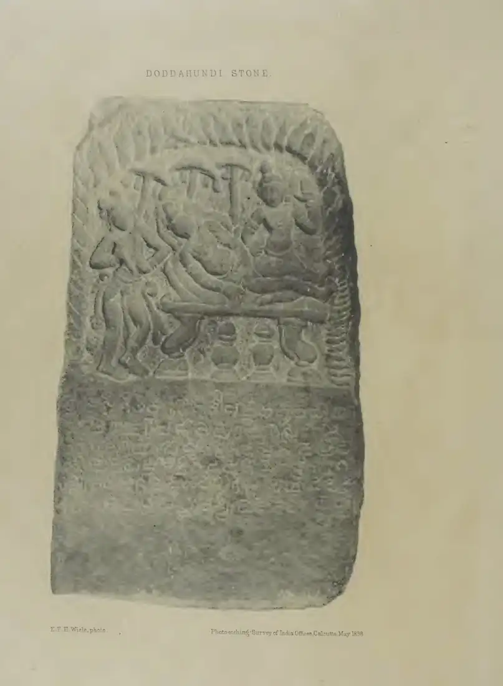
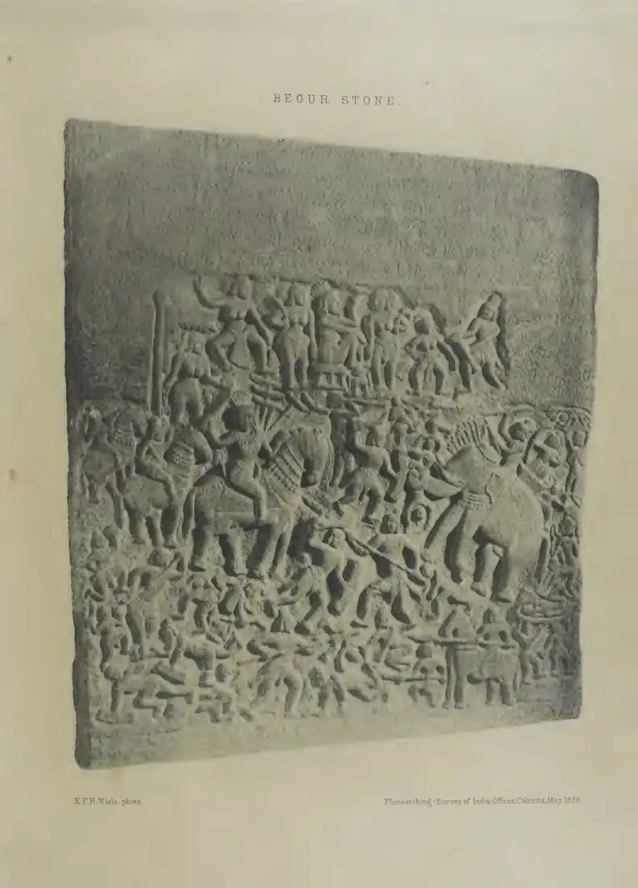
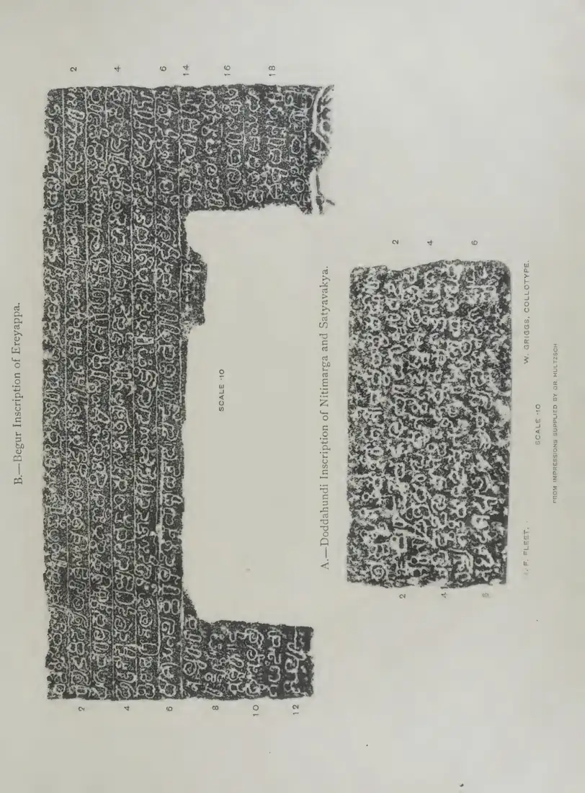
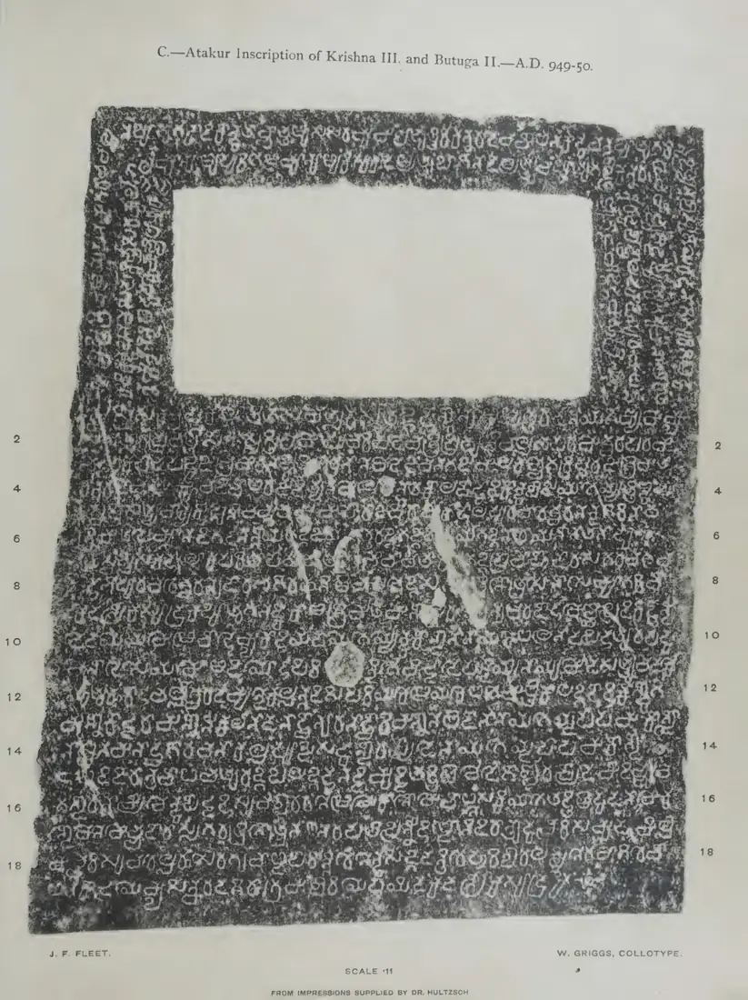

Three Western Ganga Records in the Mysore Government Museum at Bangalore
THREE WESTERN GANGA RECORDS IN THE MYSORE GOVERNMENT MUSEUM AT BANGALORE.
In Vol. V. of this Journal, pp. 151 to 180, I have contributed an article on the Șravaṇa-Belgoła epitaph of Nołambântaka-Mârasimha II., with a first serious attempt to settle the real history and chronology of the family of the great Gaṅga princes of Mysore, to which he belonged. That article is correct in all its essential features. But, while it was still in proof, it came to my knowledge, from information that became available too late, that certain additions and modifications might be made, and certain corrections ought to be made, in it. The additions did not much matter; they could be attended to on any future occasion. The modifications and corrections were a more important matter; and it was mortifying not to be able to make them. The proofs, however, were in pages, with other articles already in page-proof after them. And it was, therefore, impossible to make the necessary alterations. In these circumstances, I had to leave my article just as it stood. And I now take the first convenient opportunity that I have had, of reverting to the subject of it.
Plate 1 is bound after this page.
Before entering, however, on any general remarks, I now put forward revised versions of three Western Ganga records, final renderings of which have not as yet been arrived at.
A.— Dođđahunđi Inscription of Nitimârga and Satyavâkya.
This inscription was brought to notice by Mr. Rice in 1894, when he edited it, with a lithograph, in his Ep. Carn. Vol. III., TN. 91. I give my rendering of it from an ink-impression, for which I am indebted to the kindness of Dr. Hultzsch. The collotype is from the ink-impression. The photo-etching is from a photograph of the stone itself.
Dođđahunđi is a village somewhere in the Mûgûr hôbli of the Tirumakûđlu-Narasîpur tâluka of the Mysore district. It should be shewn in sheet No. 60 or 61 of the Indian Atlas; but it is not to be found there.1 The name means “ large hamlet;” and it is probably an appellation of somewhat modern introduction, as the record does not appear to include any name answering to it, and gives the name of the village itself, or else of another village which gave the name to the circle to which this village then belonged, as Gulđapâđi. The inscription is on a stone, apparently about six feet high, which was found lying in a pond at Dođđahunđi and is now in the Mysore Government Museum at Bangalore.
The upper part of the front of the stone is occupied by sculptures illustrating the scene that is referred to in the record, namely, the death of a prince who had the appellation of Nitimârga. He is shewn lying on a couch, from the back of which there stand up two royal umbrellas. Near his head there stands his eldest son, Satyavâkya, with one similar umbrella behind him. And on the couch there is seated a follower of the prince, named Agarayya, who is represented as supporting across his knees the legs of the dying prince, and as holding with his right hand a dagger which he seems to be drawing out from the left side of the prince.— The writing commences below the sculptures. Lines 1 to 6, on the front of the stone, cover an area about 3' 6" broad by 1' 9" high. Below them there is a blank space, about one foot high, which was evidently left void in order to allow of the stone being set upright in the ground without hiding any part of the record. Lines 7 to 24 are short lines down the side of the stone, covering an area about 9" broad by 3' 5" high, with a similar blank space below them. And a line runs across the stone between lines 15 and 16, to mark a division of the text there. The writing on the front of the stone is in a state of fairly good preservation. The writing down the side of the stone has suffered more damage; and for this reason, and also because it was not very convenient to introduce it in the Plate, this part of the record has not been reproduced.— The characters are Kanarese, boldly formed and well executed. The size of them— (by which I mean, here and always, the height of such letters as ga, cha, da, pa, etc., which are properly formed entirely between the limits of, so to speak, the lines of writing, without any projections above or below)—ranges from about 1 1/4" in the ga of Agarayyam, line 4, to about 2 1/2" in the n of Komguntvarman, line 1; the penultimate syllable lgu of line 6 is about 4 1/4" high. The characters include final forms of r in line 3 and n in line 4, and also a final form of l or else an l with a virâma attached to it, in line 3. And they shew the lingual d, distinguished from the dental d by a marked turning up and over of the right-hand end of the lower part of the letter; it can be recognised very clearly in êridode, line 4. Two of the characters which furnish the best test for undated records of the period to which this record belongs, do not occur here; namely, the b and the guttural ñ. In vakhya, by mistake for vâkya, line 6, we have a kh of the old square type,2 which cannot be placed much after A.D. 860. On the other hand, the l, which we have in Kovalâla, line 2, and also in kalnâdu, line 8, is of the later cursive type, which cannot be placed much before A.D. 800: we have it throughout the grant of Gôvinda III., of
1 Mûgûr is in sheet No. 61 (1894), in lat. 12° 7', long. 77°.
2 I use the word “ type ” intentionally. Plenty of instances will be forthcoming, in which the old square “ type ” of the kh and other characters is followed, though the actual “ forms ” present hardly a straight line at all.
A.D. 8041 (except in modalol, line 9, and lîkhîtah, line 19), and perhaps in vallabha, line 1 (but not in ballaha, line 2, and lôka, line 3) of the Patṭadakal inscription of his father Dhruva;2 but the Talakâđ inscription of Śripurusha-Muttarasa3 shews only the old square type of the l. The j, which occurs twice, in line 2, is of the old square type, which remained in use during the whole of the ninth century A.D., but, towards the end of it, in conjunction with also the later cursive type. In the ja of râja,— the fourth syllable in line 2,— we have an ordinary old square j, but of the open form; that is to say, with spaces at the place at which the top part of the letter and the lower part usually join to form an upright, and at which the centre stroke to the right starts from that upright. In the jâ at the beginning of line 2, we have a peculiar form of the old square type of the j, which I would propose to call the “ back-to-back ” j, because one more stroke in the centre of the left-hand (proper right) part of the character would have given us a double j back-to-back: here, the exact form of it is closed; in B., the Bêgûr inscription, we shall meet with it in its open form. In other genuine records, we have this back-to-back j, in the closed form, in the words śrirâjya and yuvarâja, line 3, and several other words, in the Kyâtanahalli inscription of Bûtuga I. of the period A.D. 870-71 to about 908,4 and in the word Bijêsvarada in a short inscription at Patṭadakal, in the Belgaum district,5 which may be referred to the same period or may be placed somewhat later. And we may note that in spurious records we find it all through the Merkara grant, of the Western Gaṅga series,6 the lithographs of which shew it in both the open and the closed forms, and which includes also the corresponding form of the guttural ñ which we shall meet with in B., the Bêgûr inscription; and we find it, again, in the same class of records, in the Chicacole grant of Dêvêndravarman, of the Eastern Gaṅga series,7 in the closed form in vijayavata, line 1, Vâjasanêya, line 13, Nâgarâja, line 23, and other words, and in the open form in nija, line 7. The forms of the j in this Dođdahundi record do not guide us much. But the kh and the l indicate that we may place it in the period A.D. 800 to 860, even if they do not actually compel us to do so. There are, indeed, in the forms of j and ñ which occur in B., the Bêgûr inscription, plain indications that the development of the alphabet of Western India was slower in Mysore than in the more northern parts. But it does not seem likely that the old square type of kh can have lingered on long enough, even there, to justify us in referring this record to A.D. 938 or thereabouts, as we should have to do if, instead of accepting my proposed identification of the princes who are mentioned in it, we identify the Nitimârga, whose death is recorded, with the next admissible prince who had that appellation.— The language is Kanarese, of the archaic type, in prose. The record includes two words, mane-magattin in line 4 and kil-gunthe in line 5, for which only conjectural meanings can be proposed.8 And, as indicated to me by the Revd. Mr. Kittel,9 in śrimar, for śrimat, line 3, the composer seems to have formed a plural which is not justifiable.— As regards orthography, the only actual peculiarity is the use of s for ś in êsvara, line 2. But we may note also that we have the short i for the long î twice, in lines 1 and 5, and the long î for the short i once, in line 1; this latter feature, however, may be treated as a mistake in writing, quite as much as a mistake or peculiarity in spelling.10
1 Ind. Ant. Vol. XI. p. 125, and Plate.
2 Ibid. p. 124, and Plate. A more faithful reproduction of this record will be issued before long.
3 Ep. Carn. Vol. III., TN. 1, and Plate. 4 Ep. Carn. Vol. III., Sr. 147, and Plate.
5 Ind. Ant. Vol. X. p. 170, and Plate at p. 167.
6 Ind. Ant. Vol. I. p. 363, and Plate, and Coorg Inscrs. p. 1, and Plate.
7 Ind. Ant. Vol. XIII. p. 273, and Plate. On its occurrence in this record, see some remarks by Prof. Kielhorn, above, Vol. V. p. 122, note 4.
8 See page 44 below, notes 4 and 6.
9 I consulted Mr. Kittel about the meaning of mane-magattin and kil-gunthe in this record, and about some expressions in the Bêgûr and Âtakûr inscriptions, sending him, of course, my full readings of the texts, and translations. And I am much indebted to him for various suggestions, which I mention in the footnotes.
10 It is rather a curious thing that, whereas in the oldest records the difference between i and î, as attached to consonants, is nearly always marked, less and less attention was paid to this detail, in the
The inscription records, in the first place, the death of a Western Gaṅga prince, who is mentioned in it by the appellation of Nitimârga, without his proper name being disclosed. We are told, however, that he left a son who had the appellation of Satyavâkya. We know that Satyavâkya was the appellation of a prince Râjamalla, for whom we have the date of A.D. 870-71. We know also that Srîpurusha-Muttarasa, who is to be placed about A.D. 765 to 805, had a son named Ranavikrama, and that the latter had a son named Râjamalla. And consequently, since the characters place the record justifiably, if not of absolute necessity, in the period A.D. 800 to 860, we naturally identify this Satyavâkya with the Râjamalla of A.D. 870-71, and this Nitimârga with Ranavikrama; and, till we learn anything more definite as to the actual year of Ranavikrama's death, we place the record roughly about A.D. 840. In the second place, the inscription registers the fact that Satyavâkya-(Râjamalla) granted to a follower of his father, named Agarayya, a kalnâđu or allotment of uncultivated land1 known by the name of Gułdapâđi, the components of which were evidently specified in lines 16 to 22.
TEXT.2
| 1 | Ôm3 | Svasti | Ni(ni)timârgga-Komûguñi(ñi)varmma-dharmmamahârâ | ||
| 2 | jâdhirâja | Kovalâla-purapar-êsvara4 | Nanda- | ||
| 3 | giri-nâtha | śrîmar(t) | Permmanađigał | svarggam5=êrida[m]6 [|*] | |
| 4 | Êridođe | Pemmânađigała | mane-magattin | Aga- | |
| 5 | rayyam | Ni(ni)timârgga-Permmanađige | kil-guñthey=âda[m] | [|*] | |
| Permma- | |||||
| 6 | nađigał=agga-putram7 | Satyavakhya8-Pem[m]ânađigał=Gułda- |
Down the side of the stone.
| 7 | [pâ]điya[m] |
| 8 | kalnâđu |
Kanarese characters, as time went on, until at length the distinction practically disappeared altogether, and it remained for modern invention,—on the part, I believe, of the early Jesuit missionaries,—to devise the mark by which the long ſ is now distinguished from the short i, and also the long é and ó from the short e and o. The ancient alphabet does not seem to have ever marked the difference between the long and the short forms of e and o; we read the signs as e or é. and o or ó, just as is required. As regards the i and ſ, it is a question, in publishing critical texts, how far it is necessary to complicate the texts by, for instance, shewing the short i when it actually occurs in an original by mistake for a long ſ, and then making a correction in brackets or in a footnote. But probably, while attending to the detail in the case of the earlier records, we may ignore the point in records dating from about A.D. 1000 onwards, and may give the short i or the long ſ as is actually required, irrespective of the exact form in the original.—Dr. Burnell has traced back the present Kanarese method of marking the long ſ, é, and ó, as attached to consonants, to the first half of the sixteenth century A.D. (South-Ind. Palxo. p. 30).
1 The word kal-nâđu may be translated literally by “stoney tract.” Mr. Rice has pointed out,—quite correctly, I think,—that, as used in inscriptions, “it seems to designate what is now known as Government “waste, that is, land that has not been taken up for cultivation or that having been cultivated has been “abandoned” (Ep. Carn. Vol. III. Introd. p. 8).
2 From the ink-impression.
3 Represented by a plain symbol. So, also, in line 15, where, however, the symbol is turned the other way.
4 Read puravar-êsvara.
5 We have here a rather pointed instance, to which my attention was specially drawn by Mr. Kittel, of the use of the nominative instead of the accusative, which is mentioned by Kêširâja in his Şabdamañi-darpana, sûtra 136. In other records, we often find in this expression the dative, svarggakke, instead of the accusative; this usage is mentioned in sûtra 135.
6 Read êridar, more correctly, in agreement with the honorific plural Permmanađigał.
7 Mr. Rice's text gives Pemmanađigała su-putra. The real reading is quite certain, though the gga is somewhat damaged.
8 Read Satyavâkya.
9 [ko]tṭadu1 ga(?)-
10 chcha[m] mâđi
11 parih[â]ra[m] [||*]
12 Idan=aļi-
13 do[m] Vâraṇ[â]-
14 siyan=aļi-
15 do[m] || Ôm ||
16 Idakke Kamma-
17 . . . . gaya-
18 lli(?)kummaļna(?)-
19 ga(?)tagesiko(?)-
20 tṭastaļu(?ru)ga-
21 ļavedi(?)ma(?)-
22 nṇu(?nṇu)[||*] Idan=a-
23 ļido[m] mâ-pâ-
24 tagan=a[kkuñ ||]
TRANSLATION.
Ôm! Hail! The Dharmamahârájádhirája2 Nítimârga-Koñguñivarman, the lord of Kovalála the best of towns,3 the lord of the mountain Nandagiri, the illustrious Permanađi, ascended to heaven (i.e. died). When he was ascending,—by right of being a son of the house (?)4 of Pemmânađi,5 Agarayya became, to Nítimârga-Permanađi, the attendant who drew out (the weapon that caused his death) (?)6 (In recognition of that), Satyavâkya-
1 Read kotṭudu, for which kotṭadu is a vulgarism, as remarked by Mr. Kittel.
2 See above, Vol. V. p. 163, note 2.
3 Kovalála is the modern Kôlâr, the chief town of the Kôlâr district, Mysore. In Kittel's Kannađa-English Dictionary, the modern name is given with the Drâviđian z,—Kôlâra. It is, however, doubtful whether there is any authority for this.
4 Mane-magattin. Mr. Rice would translate this by “major-domo” (Ep. Carn. Vol. III. Introd p. 4),—taking, I understand, magattin as a Tamiļ form of mahattin, which would, however, make it the instrumental singular of mahattu, a tadbhava-corruption of the Sanskrit mahat, ‘great, large, etc.’ To this there are the objections that, being an instrumental case, it cannot be in apposition with the nominative Agarayyam, and that, as the Chôla occupation of Mysore did not commence till about A.D. 1000, there is no apparent reason why the Kanarese language should be in any way influenced by Tamiļ at the period of the present record; moreover, such a hybrid compound as mane-mahattu could hardly be admitted under any circumstances. Mr. Kittel is of opinion that, if we might correct the text into maggattina, we might explain it by magga as the genitive of maggu, ‘subjection, submission,’ and attina as another form of attaṇa, ‘of that side,’ and might translate “Agarayya of the side of house-subjection, i.e. Agarayya who was in subjection to, or held the position of a dependent in, the house of Pemmânađi.” Magattu may perhaps be connected in some way with ogatana, ‘the management of household affairs.’ But I think, on the whole, that we must find in it some derivative from maga, ‘a son.’ And the idea that the expression conveys to me, is, that Agarayya was the son of a concubine of one of the princes of the Western Gañga family.—The records appear to give another similar word, which, also, Mr. Rice would translate by “major-domo” (loc. cit. p. 7) or “retainer” (p. 34), in the forms of mane-vagati, My. 41, 44, and Nj. 153, mane-yagati, My. 42, and mane-magati, My. 43. In Nj. 158, mane-vagati may qualify the woman Nilabbe, quite as readily as her son Râchamma, and therefore may quite possibly mean ‘concubine’ there. In the other cases, however, there does not seem to be any female name that the word could qualify.
5 Or “of the Pemmânađis.” We have to note the use of the form Pemmânađi here, and in line 6, whereas in lines 3 and 5 we have the more customary Permanađi.
6 Kil-gunṭhe. Mr. Rice's translation proposes “became ? lame under Nítimârgga-Permmanađi,”—which, however, does not seem very appropriate. Gunṭhe, in which the aspirated ṭk is rather peculiar, being so unusual in Kanarese, must, I think, be connected with the Telugu gunda, ‘a servant, a warrior, a soldier, an armed attendant,’ which appears in Malayâlam as kunde, ‘a slave;’ and Mr. Kittel is inclined to agree with me he considers, indeed, the termination e to be rather puzzling; but he instances the same termination in tande, ‘a father,’ which is said to be a tadbhava-corruption of the Sanskrit tđta. As regards the first part of the
Pemmânađi, the eldest son of (Nitimârga)-Permanađi, gave (to Agarayya) Gułdapâđi,1 (as an allotment of) uncultivated waste land,—having laved (his sword)(?),2 — (with) relinquishment (of all taxes). He who destroys this, is (like) one who destroys Vârapâsi! Ôm!
[(L. 16 ff.)—This part of the record evidently gives the names of the villages which made up the allotment. But the reading is very uncertain in some places. And no names can be found in the maps, helping to clucidate the reading and to divide the words. The record ends]:—He who destroys this, shall incur the guilt of the great sins!3
B.— Bêgûr Inscription of Eręyappa.
This inscription was originally brought to notice by Colonel Henry Dixon, H. M.'s 22nd Regiment, Madras Infantry, in his photographic collection, published in 1865, of inscriptions on stone and copper from various places in the Mysore territory; and a print from his negative has been given in my Pâli, Sanskrit, and Old-Canarese Inscriptions, No. 247,4 issued in 1878. In 1879, Mr. Rice gave a reading of the text, and a translation, in his Mysore Inscriptions, p. 209, with a lithograph of the entire stone (id. Frontispiece). And a rendering of the record by myself, partly from Col. Dixon's photograph and partly from an inked estampage sent to me by Dr. Hultzsch, was published in 1892, in Ep. Ind. Vol. I. p. 346. I give now a more final rendering of it from a better ink-impression, for which I am again indebted to Dr. Hultzsch. The collotype is from the ink-impression. The photo-etching is from a photograph of the stone itself.
Bêgûr is a village in the Bangalore tâluka of the Bangalore district, Mysore. It is shewn in the Indian Atlas, sheet No. 60, S.E. (1894), in lat. 12° 52', long. 77° 41', about seven miles S.S.E. from Bangalore. It is evidently the ancient Bempûr (Bempûr) or Bempûru of the record; though, why the mp or mp should have changed into g, is not apparent.5 And the record shews that it was the chief village of a circle known as the Bempûr twelve. The inscription is on a stone-tablet, measuring about 6' 6" broad by 6' 8" high, which was found at this village, and is now in the Mysore Government Museum at Bangalore.
compound, we have the word kil, kîl, kîlu, 'the state of being low, below, beneath, under, down, base, degraded or mean,' which occurs in such expressions as kil-kabbiga, 'an inferior, base poet,' kîl-dî, 'a low man,' and kîlu-manneya, 'a petty chieftain;' and in epigraphic records we meet with kil-kere or kîl-kere, evidently meaning 'a lower tank' (Inscrs. at Śrav.-Bel. No. 24), and kil-kalnâdu, meaning apparently 'a lower or smaller portion of uncultivated waste' (an inscription at Hirî-Bidanûr, for the text of which I am indebted to Mr. Rice). And Mr. Kittel, taking the whole word in connection with his proposal of mane-maggattina, would interpret the text as meaning that "Agarayya, who held a (mere) servile position in the house of Pemmânađi, became a (real, though) subordinate servant, or armed attendant, to Nîtimâr ga-Permanađi." But we have also the verb kil, kîl, kîlu, 'to draw or pull out, etc.' And I think that the indication afforded by the sculptures on the stone, suggests for kil-gunthe the meaning that I propose in my translation.
1 Mr. Rice's translation gives "Permmanađi's good son Satya-vâkya survived to Permmanađi." This requires us to analyse, at the end of line 6, Pemmânađigalge uldam. And I adopted that analysis, in taking the record to mean that "Agarayya survived to (render service to) Satyavâkya" (above, Vol. V. p. 163). But I consider now that such an analysis is wrong. The past tense of uli, 'to remain alive, to remain behind,' would be ulidam, not uldam; the line across the stone between lines 15 and 16 of the text, marks that place as the first division in the text; and the Satyavakhya-Pemmânađigal in line 6 must be taken as the agent of the verbal form koftadu (for koftudu) in line 9.
2 In line 9-10, where Mr. Rice's text gives Kappahalîi, we have in all probability gachcham mâđi. And gachcham must stand for kachcham, the accusative of kachchu, 'washing.' The expression kâlam kachchu, karchu, kalçhu, 'to wash, or lave the feet,' is a very well known one, in the case of grants given or entrusted to priests. And we have also the nouns kâl-gachchu, 'feet-washing,' and bâl-gachchu, 'sword-washing' (see page 52 below, note 4). A prince would lave an attendant's sword,—not his feet.
3 The pañchamahâpâtaka or five grent sins are, killing a Brâhman, drinking intoxicating liquors, theft, committing adultery with the wife of a spiritual teacher, and associating with any one guilty of those offences.
4 The correct name of the village was not then known, and is there given as 'Reygoor,' mistakenly.
5 The first component of the name, however, may possibly be another variant of bêhu, bêgu, 'spying;' in which case, the name would mean "spying-town" or "watch-town."
The chief part of the writing is in six lines, covering an area about 6' 6" broad by 1' 5" high, which run right across the upper part of the stone; and, in a somewhat exceptional manner, each of these six lines is separated from the next by a line cut in the stone from end to end. There are also six short lines running on in continuation down the proper right side, the same number on the proper left side, and the name of a village (treated as line 13) near the centre below line 6. Except in some places along the top of line 1, the inscription is mostly very well preserved; and it is legible throughout, in the ink-impression, without any doubt, except in respect of the village-name in line 13.—The rest of the stone is occupied by sculptures. The principal division of them represents a battle-scene. The troops on the proper right side must be those of the Vîramahèndra of the record. They are led by a man on horseback, waving a sword: that he is a person of very high rank, is indicated by umbrellas, one of which is apparently a triple one; and he seems, therefore, to be Vîramahèndra himself. Behind him there are two followers on horseback. In front of him, there is a man on foot, blowing a horn of the long straight kind. And, above the latter, there is another horseman. The troops on the proper left side are the Nâgattara army of the record. They are led by a man on an elephant, wielding a spear, who is evidently the hero whose death is recorded in the inscription; and the fierceness of the attack upon him is indicated by the arrows sticking in the forehead of the elephant. He is attended by an archer in the hauda, and by a follower on horseback shewn below the elephant. The centre and the foreground shew the fight between the two parties. Above all this, there is another scene, the central figure of which is a man, seated on a low stool, with his feet resting either on a man kneeling on all fours or on a footstool devised in that form. He may possibly be Ereyappa. But the absence of umbrellas is rather against that view; and it seems more likely that we have here another representation of the leader of the Nâgattara army who was killed in the battle. He is attended by two female chauri-bearers. Behind the chauri-bearer at his back, there stands another woman, who seems to be trying to entice into a cage a bird which is perched on his uplifted left hand. And behind her, again, there is another woman, standing under a flag-staff. Beyond the chauri-bearer in front of the central seated figure, there stands another woman. And beyond her there is a man, standing, and holding across his right knee what seems to be either a quiver or the scabbard of a sword: that he, also, is of some rank, is shewn by the head-dress, which figures similarly on the heads of the other three principal figures, and seems to include a kind of plume standing up from the patta or frontlet or fillet of dignity and authority; and he is probably the Iruga of the record, who was appointed to the command of the Nâgattaras in consequence of their original leader being killed in the battle.—The characters are Kanarese, boldly formed and well executed. The size of them ranges from about in the l of vélđođe, line 4, to about in the va of Tovagûrû, line 6: the śrî of śrîmad, line 2, is high; and the śrî at the end of line 19 is high. The characters include a final form of r at the end of line 2, and either a final l, or else an l with a form of the viráma attached to it, in Kúdal, line 15. They include the distinct form of the lingual đ, which can be seen very clearly in mâđi and Gaṅgavâđi, line 3, and in kalnâđ, line 6: but the distinction was not made throughout; for instance, it was not observed in endođe, line 6. We have, in this record, all the leading test-letters. The kh, b, and l present only the later cursive forms: the kh occurs once, in mêkhałâ, line 1; the b may be seen very clearly in badhdhaâ and Bempûru, line 6; and the l, in lakshmi, line 2, and pola, line 15. In Gałaânjavâgilû, line 11-12, we have the later cursive j: but the old square type is presented in jaładhî-jała, line 1: here, in both cases, we have the back-to-back j, in its open form, that is to say, with a small space at the top and also at the bottom of the central upright stroke; it is particularly clear in the second instance. The guttural ñ follows the types and forms of the j, as, for some reason or other not yet explained, it nearly always does: in Irugañge, line 5, maṅgala, line 6, Komaraṅgundu, line 7-8, Nâgaraânge,
line 18-19, and maṅgala, line 19, it is the later cursive ñ, differing from the corresponding j in only the absence of the right-hand stroke which, in the j, starts and turns up from the centre of the letter; on the other hand, in Gaṅga, line 1, Gaṅgavâđi, line 3, and dêvaṅge, line 4, we have an ñ of the old square type, answering to the back-to-back j, from which it differs, as may be seen best in line 3, essentially in the absence of the centre stroke to the right, and, as found in this particular record, by the projections to the left being turned in to meet the central upright stroke.—The language is Kanarese, of the archaic type, in prose. In line 18, we have a curious word, šavuchara, which seems to stand for sahachara, ‘a companion, a follower.’—In respect of orthography we may notice (1) the use of rí for ri in álāmkrity, line 1-2, though the ri is given correctly in švayamvrita, line 2; (2) the use of dhdh for ddh in badhdhām, line 6; (3) the use of b for v in Bíra, line 3; (4) the use of ś for s in švayamvrita, line 2; and (5) the use of the Drâviđian l in all the Sanskrit words, except, of course, as an initial in lakshmi, line 2, and except in maṅgala, line 6. The last-mentioned word occurs spelt both ways. In line 19, where it is the ordinary Sanskrit word, used in its customary sense, it is written with the Drâviđian l. In line 6, it is part of a village-name;1 and there it is written with the ordinary l, as seems to be always the case, even in Tamiļ records, when it is used in that way.
The inscription, which is partly a vírgal or monumental record of a hero who was killed in battle and partly an ordinary śásana or charter, refers itself to the period of the rule of the Western Gaṅga prince Erėyappa, i.e. to between about A.D. 908 and 938. It tells us that Erėyappa lent to Ayyapadėva, for the purpose of fighting against Viramahèndra, a force which was collected and commanded by the leader of the Nâgattaras. The commander of the force was killed in a battle that was fought at Tumbepâđi. And Erėyappa appointed Iruga to succeed to the leadership of the Nâgattaras, and also, in recognition of the bravery that had been displayed by his predecessor, granted to Iruga the circle of villages that was known as the Bempûr twelve.
As has been pointed out by Mr. Rice2 since the time when the contents of this record were first discussed, Ayyapadėva was doubtless a Nołamba, and is to be identified with the Nołambâdhirâja-Ayyapadėva, “of the Pallava lineage,” one of the Nołambas of the Nołambavâđi province on the north of the Gaṅgavâđi province, who is mentioned in an inscription at Hirî-Bidanûr.3 The identity of Viramahèndra is not so certain. But there is, at any rate, no good reason now for proposing to identify him with the Nołamba Mahèndrâdhirâja who is mentioned, in inscriptions at Baragûr and Hêmâvati,4 as a son of a Nołambâdhirâja who was a brother-in-law of Nîtimârga son of the Gaṅga prince Râjamalla. And it seems probable that he was an Eastern Chalukya king. In that dynasty, we meet, not only with Râjamahèndra as a bíruda both of Amma I. (A.D. 918 to 925) and of Amma II. (A.D. 945 to 970),5 but also with Gaṅdamahèndra as a bíruda of Châlukya-Bhima II. (A.D. 934 to 945).6 The name Viramahèndra, “a very Mahèndra (Indra) among brave men,” is exactly synonymous with Gaṅdamahèndra, “a very Mahèndra among heroes.” The Eastern Chalukyas were constantly at war with the Râshtrakúṭa kings and the Western Gaṅga princes. The name of “the very terrible Ayyapa” is actually mentioned among the names of certain enemies of Châlukya-Bhima II.,7 whom he is said to have slain. The dates fit in satisfactorily. Thus, in all probability the Viramahèndra of this record is Châlukya-Bhima II., who, we must then understand, had invaded Mysore and was met by a combined force of Gaṅgas and Nołambas. And the event has
1 [At the end of village-names, maṅgala seems to be an abbreviation of the frequent, but inconveniently long term chaturvêdi-maṅgala, ‘a Brâhmañ settlement.’—E.H.]
2 Ep. Carn. Vol. III. Introd. p. 4, note 3.
3 For this record, see, provisionally, Ep. Carn. Vol. IV. Introd. p. 10, note 2.
4 See Ep. Carn. Vol. III. Introd. p. 4, and Vol. IV. Introd. p. 11.
5 Ind. Ant. Vol. XX. pp. 266, 270.
6 Ibid. p. 269.
7 Ibid. p. 270.
to be placed towards the end of the rule of Eřeyappa, between about A.D. 934 and 938. Against this, it might be urged, in the first place, that the statement in this record, that Eřeyappa was governing the Gańgavâđi province as an united whole after having deprived all his enemies of their power, is suggestive of an early period in his rule, and, in the second place, that an early period is suggested by also the fact that the record includes an ñ and a j of the old type, which seems to have entirely disappeared in the Râshṭrakûṭa territory by about A.D. 900. But the Âtakûr inscription, C. below, of A.D. 949-50, similarly describes Bûtaga II. as then governing the province after having fought and killed Râchamalla I.,—regardless of the fact that that event occurred about ten years before that date. While, as regards the palæographic point, the record can at any rate not be placed before A.D. 906-907, which date we have for Eřeyappa's predecessor Bûtuga I. There seems, therefore, no objection, from this point of view, to placing it even some thirty years later. And we thus gather from this record, in respect of palæography, that the development of the alphabet in Mysore was perceptibly slower than in the Râshṭrakûṭa territory more to the north.
Of the places mentioned in the record in addition to Bempûr-Bêgûr, we may doubtless safely identify Tumbepâđi, where the battle was fought, with the modern 'Tumbadi' of the Madras Postal Directory and of the Indian Atlas, sheet No. 60, N.E. (1895), in the Maddagiri tâluka of the Tumkûr district: the place is in lat. 13° 34', long. 77° 17', about fifty-four miles N.N.W.½W. from Bêgûr; and this identification locates the scene of the battle near enough to the Nołambavâđi province—(if not actually in it)—to account for Ayyapadêva being concerned in the matter. Iggalûr still exists under the same name, eight miles to the south-east from Bêgûr. Tovagûru is probably the 'D.Togur' of the map, two-and-a-half miles on the south-east of Bêgûr. Pûvina-Pulimangala is doubtless the modern 'Hulimangala,' three-and-a-half miles on the south of Bêgûr.1 And Kûđal may be 'Kudlu,' three miles N.E. by E. from Bêgûr.
TEXT.2
- 1 Ôm3 Svasti Samasta-bhuvana-vinûta-Gańga-kuła-gagana-ni[r*]mmała-târâpati-jaładhi-jała-vipuła-vałaya-mêkhal[â]-ka[â]p-âlam-
- 2 kri(kri)ty-ailâdhipatya-lakshmi-śvayainvrita-patítâdvâdy4-aganita-guṇa-gaṇa-vibhû s ha ṇ a-vibhûshita-vibhûti śrímad-Eřeyapp-arasar
- 3 pagevar=ellaman=ni[h*]kshatram-mâđi Gańgavâđi-tombhattarù-sâsiramuman5=êka-chhatra6-chchhâyeyoł=âluttam-ildu. Bi(vi)rama-
- 4 hêndranoł=kâdal=endu Ayyapadêvange sâmanta-sahitam. Nâgattaranam danđu vêldođe Tumbepâđiyoł=kâdi kâlegam=imb=a-
- 5 łidođe âneyoł=ânt-iřidu sattođ=adam kêld=Eřeyapam7 mechchi Irugange Nâgat-tara-vatṭtam-gatṭti Bempû-ppannirađu-
1 The old map, sheet 60, of 1828, which I was using in 1892, does not shew 'Hulimangala.' The new map, sheet No. 60, N.E., of 1895, does not shew the 'Woolmungle,' about twenty miles towards the E.N.E. from Bêgûr, which I selected in 1892 from the old map; nor can I find in it the 'Nelloorputnam' and 'Chicka-Nalloor' which, on the authority of the old map, I then put forward as possible representatives of Kûtanidu-Nallûru and Nallûru-Komaraâgundu, but which now seem, under any circumstances, too distant to belong to the Bempûr twelve.
2 From the ink-impression.
3 Represented by a plain symbol.
4 Read lakshmi-svayainvrita-patítv-âdy. The tva of patítva is also understood after târâpati in line 1.
5 Read sdsiraman. The copulative ending is not wanted, as only one province is mentioned.
6 Read chchhattra.
7 This name would have been written more correctly with the double pp in the fourth syllable, as in line 2. It occurs again with the single p in line 17 below, and in line 20 of C., the Âtakûr inscription.
Plate 2 is bound after this page.
Plate 3 is bound after this page.
| 6 main1 | śásana-badhdha(ddha)m | kalnâd=ittan=Av=ávuv=endođe | || | Bempûru ||2 |
| Tovagûrû | Pûvina-Pullimañgala | Kûtanidu-Nallûru | || | |
| 7 | Nallûru-Koma- | 13 | Sâra[m]vu(?) || | 14 Eljkuppe Paravûru |
| 8 | rangundu || I- | 15 Kûđal | inituma[m] || | ||
| 9 | ggalûru || Du- | 16 pola-mêre sahita- | ||
| 10 | gmonelmalli | 17 m=ittan=Eřeyapa[m] || | ||
| 11 | Gałamjavá- | 18 śavucharan=Nâgara- | ||
| 12 | gilû || | 19 înge3 [||*] Mañgała-mahâ-śrî || |
TRANSLATION.
Ôm! Hail! When the illustrious Eřeyapparasa,— whose dignity was adorned with the decoration of an uncounted number of good qualities, such as being a spotless moon in the sky which is the family of the Gañgas praised throughout the whole world, and such as being the lord, chosen by herself, of the goddess of sovereignty over the earth, who has for an ornament round her waist a zone which is the great circle of the waters of the oceans,— having deprived all his enemies of their power, was governing the Gañgaváđi ninety-six-thousand as an united whole,4 he ordered5 the Nâgattara, together with (his) tributary chiefs, (to supply) an army to Ayyapadêva for the purpose of fighting against Viramahèndra; and thereupon he (the Nâgattara) fought at Tumbepâđi, and, when the press of battle became great,6 leaned upon the elephant, and was pierced and died.
(L. 5)— Thereupon, having heard that, Eřeyapa was pleased, and appointed Iruga to the leadership of the Nâgattaras,7 and gave him, secured by a charter, the Bempûr twelve, (as an allotment of) uncultivated waste land.
1 Read Bempûr-ppannarađumain.
2 The punctuation in this part of the record seems, at first sight, rather capricious. But it probably marks some subordinate groupings of the villages. And the copulative long ú in Tovagûrû and Gałamjavágilû points in the same direction, though, in that case, there ought to have been a more systematic use of copulative endings all through lines 6 to 15.
3 Read sahacharan=Nâgattaraînge.— As regards the latter word, see the next note but one.— As regards the former word, the śavucharan of the original might stand for śaucharan, saucharan, or even (see Kittel's Dictionary, under au) śañcharan, or sañcharan. But none of these words gives a suitable meaning, unless we can accept saucharan, and, taking it as equivalent to sucharitan, render it by 'well-conducted, well-behaved.'
4 Éka-chchhattra-chchhâyeyoł; lit. "in the shade of one umbrella." See the explanation given above, Vol. V. p. 164, note 6.
5 Vělđođe might stand for bělđođe, from bělù, = běđu, 'to wish, solicit, ask.' But, as indicated to me by Mr. Kittel, it is, no doubt, better taken here as standing for pělđođe, from pělù, 'to utter, say, narrate, tell, command, order.'— With the infinitive in kâdal=endu, compare geyyal=endu and sâdhisal=endu (above, Vol. V. p. 223, note 6, and p. 225, note 2).— As regards "the Nâgattara," from a comparison of the text in lines 4, 5, and 18-19, it seems that we have in line 4 the accusative singular, and in line 18-19 the dative singular (with a careless omission of the third syllable, tta), of a base Nâgattara, as the proper name of a family or clan rather than of an individual.
6 Kâlegam-imb=alîdođe; lit. "when the battle space-failed."— I was inclined to take kâlegam as the dative singular of a proper name, Kâle, and to translate "when space failed to even Kâle, i.e. when the press of battle became too great even for him,"—thus finding here the actual name, which otherwise is not mentioned (see the preceding note), of the hero who was killed on this occasion. Mr. Kittel, however, considers that kâle is not very probable as the name of a man, and that it is better to take kâlegam in the way in which it most naturally presents itself, namely, as the nominative singular of kâlega, kâlaga, 'fight, battle, war.'
7 Lit. "having tied to (the forehead of) Iruga the fillet of authority of the Nâgattaras." Vatțam is for patțam; and gatți for katți. Patțam katțu or gatțu, 'to tie the frontlet or fillet of dignity or authority,' is an expression of constant occurrence in respect of the crowning of kings and princes. In respect of its use in the case of lower appointments, we have instances, analogous to the present one, in the Permađi-patța which, the Kôtûr inscription tells us, the Satyavâkya of that record conferred on the son of a Gâmunda or village-headman (Ind. Ant. Vol. VI. p. 103, No. III., and Coorg Inscrs. p. 6), and in the Mâdivarma-patța which belonged to a certain Mâchiga, a follower of Nołambântaka-Mârasinha II. (Ep. Carn. Vol. IV., Hg. 110). The last mentioned record
(L. 6)—Those (villages) are as follows :—Bempûru; Tovagûru, Pûvina-Pullimañgala, and Kûtanidu-Nallûru; Nallûru-Komarañgundu; Iggalûru; Dugmonelmalli and Galañjavâgilu; Sâramvu (?); Ełkuppe, Paravûru, and Kûdal. This much, with (a specification of) the boundaries of the fields, gave Eřeyapa to his follower, the Nâgattara. May there be auspicious and great good fortune!
C.— Âtakûr inscription of Křishna III. and Bûtuga II.— A.D. 949-50.
This inscription was first brought to notice by Mr. Rice in 1889, in his Inscriptions at Šravana-Belgola, Introd. p. 19, note 10, and p. 21. A rendering of it by myself, from an inked estampage sent to me by Dr. Hultzsch, was issued in 1892, in Ep. Ind. Vol. II. p. 167. And a rendering of it by Mr. Rice, with a lithograph, was published in 1894, in his Ep. Carn. Vol. III. Md. 41. I give now a more final rendering of it from a better ink-impression, for which I am again indebted to Dr. Hultzsch. The collotype is from the ink-impression. The photo-etching is from a photograph of the stone itself; owing to the bad light in which the stone stands, it fails to shew much of the writing, though it presents the sculptures clearly enough.
Âtakûr,— or, perhaps, according to a more recent custom, Âtagûr,— is a village about fifteen miles to the N. E. by E. from Manđya, the head-quarters of the Manđya tâluka of the Mysore district. It is shewn in the Indian Atlas, sheet No. 60, S.E. (1894), as 'Atgur,' in lat. 12° 39', long. 77° 7'; and it is shewn as 'Atagur' in the map that accompanies the revised edition of Mr. Rice's Mysore, Vol. II. : in the old sheet No. 60 (1828), however, it is shewn as 'Atcoor,' which answers to the spelling given in Mr. Rice's Ep. Carn. Vol. III., and to what is probably still the more usual form of the name. With the slight difference of u for a in the second syllable, the record mentions it as Âtukûr. And the record shews also that it was the chief village of a circle known as the Âtukûr twelve. The inscription is on a stone tablet, measuring about 5' 1" broad towards the bottom by about 6' 8" high, which was found set up in front of a temple known as that of the god Challêsalinga,— the Challêsvara of the record itself,— about a quarter of a mile to the north of the village, and is now in the Mysore Government Museum at Bangalore.
The chief part of the writing consists of nineteen lines, covering an area about 5' 1" broad (in line 19) by 4' 0" high, which run right across the lower part of the stone. But there is a subsidiary record, lines 20 to 24, on the upper part of the stone, in the margins that were left above and on each side of the sculptures belonging to the principal part of the record : lines 20 and 21 run up the proper right margin, along the top, and down the proper left margin; line 22 is a short line on the proper right margin, below the beginning of line 21; and lines 23 and 24 are short lines on the proper left margin, commencing below, respectively, the nna of Kannara and the ûge of Bûtugaûge of line 21. The writing is in a fairly good state of preservation throughout; and the whole of the record can be read with certainty, with the exception of the akshara before Tri[nê]tran, line 3, and perhaps of the word âpa[ghâ]ta in line 7.— The sculptures on the stone cover an area about 3' 2" broad by 1' 6" high. They represent a hound and a boar fighting; and they refer to an incident mentioned in lines 10 and 11 of the record.— The characters are Kanarese, boldly formed and well executed, of the regular type of the period to which the record refers itself. The size of them ranges from about 1" in the la of Chôlane, line 16, to about 1½" in the ma of â mañnan, line 13 : the mba of emba, line 19, is 2¾" high; and the ka of Sûdrakam, in the same line, is 2½" high vertically and 3" on the slant. The
illustrates also its higher application, in giving the date as the seventh year of the tying of the fillet of Satyavâkya (Mârasimha II.). And in this application it was synonymous with râjyâbhishêkam-geyu, 'to anoint to the sovereignty or rule,' which is the expression used in giving the regnal date of the Biliûr inscription of Satyavâkya (Bûtuga I.) of A.D. 888 (Ind. Ant. Vol. VI. p. 102, No. II., and Coorg Inscrs. p. 5).— Judging from the headdresses of the four principal figures in the sculptures on the stone, the patṭa seems to have included a kind of plume standing straight up above the head, in addition to a fillet passing round the head.
characters include final forms, or forms with the viráma attached, of t in lines 3, 6, and 9, of l in line 13, and of l in lines 6, 9, 11, and 12. The lingual d can be recognised in náđa, line 10, vitĵode and ođa, line 11, and eđeg, line 15. The palæography does not present anything calling for special comment, as the kh does not occur, and the other test-letters, ñ, j, b, and l, present, naturally enough, only the later cursive forms.—The language is Kanarese, of the archaic type; and there are verses in lines 15 to 19. In line 11 we have morađi as a variant of morađi, ‘a hill, a hillock;’ and in line 12 we have aṅgaĵol, the locative singular of aṅgaĵ or aṅgaĵu as a variant of aṅgaĵa, = aṅgaṇa, in the sense of ‘an open space, an area.’ And we may note the use of v, instead of the more customary m, in erpatturaĵm, line 21.—In respect of orthography we may note (1) the use of ri for ri in nrípa, line 1, prithuvî, line 2, and Krishna, line 3; (2) the use of b for v in bijayaĵm, line 4, and bíra, lines 16 and 18; (3) the occasional use of s for ś, for instance, in Saka, line 1, and Súdrakaĵm, lines 9 and 19; and (4) the use of ś for s, once, in Šômyam, for Saumyam, line 1.
The principal part of the inscription is dated, without full details, in the Saumya sañvatsara, Šaka-Sañvat 872 (current),1 = A.D. 949-50. And it refers itself to the time of the Ráshtrakúta king Kannaradéva-Krishna III.,2 and of the Western Gaṅga prince Satyavákya-Bútuga II.3 It tells us, in the first place, that Krishna III. had fought and killed the Chôla king Rájáditya, otherwise called Múvađi-Chôla,4 at a place named Takkôla, and was going in triumph, or, in other words, was making a state progress through his dominions.5
1 The sañvatsara agrees with the given Šaka year only according to the southern luni-solar system of the cycle,—which, however, is the proper one for the period and the part of the country with which we are concerned,—and only by applying the Šaka year as a current year; see Prof. Kielhorn’s references to this date, in Ind. Ant. Vol. XXIV. p. 187, No. 79, and Vol. XXV. p. 267, note 5.
2 The following birudas of Krishna III. are mentioned in this record,—Añkatriṇêtra, Âneveđeṅga, Vanagajamalla, and Kachchega; see page 53 below, note 7, the Postscript on page 83, and page 55, notes 7, 8, 9.
3 His proper name occurs in line 9, in the biruda “the champion of Bútuga,” which is applied to Maṇalera.—The following birudas of Bútuga II. himself are mentioned in this record,—Nanniyegaṅga, Jayaduttaraṅga, Gaṅgagângêya, and Gaṅganârâyaṇa.
4 The word múvađi means ‘three folds, three times,’ from mú, = múru, ‘three,’ and mađi, ‘bending, folding, doubling; fold, times.’ Another form of it is mummađi. In the Tamil records, the biruda appears sometimes as Mummađi-Chôla, and sometimes as Mummuđi-Chôla; and Dr. Hultzsch has rendered it by “the Chôla king (who wears) three crowns, viz. those of the Chôla, Pândya and Chêra kingdoms” (e.g., South-Ind. Inscrs. Vol. III. p. 29), finding an indication that that is its purport in a verse at the end of the Raṅganâtha inscription which describes Sundara-Pândyadéva as building “three golden domes, by which (the temple of) Šríraṅga glitters as he (the king) by the (three) crowns worn at (his) coronation” (above, Vol. III. p. 17); and so also Mr. V. Venkayya (Ind. Ant. Vol. XXII. p. 65, and see p. 60, note 14), where he quotes facts which would indicate, or at least justify, the existence of a similar biruda among the Pândyas, on the same view. There is a Tamil word muđi, meaning ‘a crown.’ Nevertheless, my opinion is that Mummuđi-Chôla is simply a variant of Mummađi-Chôla, and that in either form the biruda means literally “a three-times Chôla.” And I think, now, that the expressions Immađi-Nołambâdhirâja, Mummađi-Chôla, and Nûrmađi-Taila mean, not “the second Nołambâdhirâja, the third Chôla, the hundredth Taila,” but “the Nołambâdhirâja who was twice as great and powerful, or twice as famous, as any Nołambâdhirâja who ever preceded him,” and so on. An inscription of A.D. 1168 at Baĵagâmi (P. S. O.-C. Inscrs. No. 185, and see Mysore Inscrs. p. 111) describes the temple of Dakshiṇa-Kêdârêśvara as (line 30 f.)—Vârđnâsigaĵv=irmmađi Kêdârakkaĵn nârmmađi Šríparvatakkaĵn sđsirmmađi,—“twice (as sacred) as even Vârâṇâsi, a hundred times (more sacred) than even Kêdâra, a thousand times (more sacred), unan even Šríparvata.” So, also, Rêvakanimmađi (see page 71 below, note 5) probably stands for Immađi-Rêvaka and means “a Rêvaka twice as beautiful or accomplished as any preceding Rêvaka.”
5 Bijayaĵ-geyyutt-ilđu. From Kittel’s Dictionary, it would appear that the word bijaya, as used in this combination, is treated by the Native grammarians as another form of bija, biya, and as coming from the Sânskrit vṣ, vyay, ‘to go, to move, to go apart or in different directions,’ and that bijayaĵ-gey and biyaĵ-gey are explained by them as meaning simply ‘to walk, to go, to come.’ But, as used in the inscriptions, the expression has plainly a more extended meaning than that; namely, it implies the idea of ‘going in state, going in triumph. It is evidently a shorter form of dig-vijayaĵ-gey, for an instance of which see above, Vol. V. p. 223, note 6. And, in view of that longer form, I think that the word bijaya is to be more correctly treated as simply a tadbhava
It then mentions Bûtuga II. as governing,— the Gaṅgavâđi ninety-six-thousand province being understood. It then introduces a follower of Bûtuga II. named Maṇalera,1 who belonged to the Sagaravamśa or race of the Sagaras and had the hereditary title of “lord of Valabhî the best of towns,” and whose prowess in battle is described in the verses in lines 15 to 19. Bûtuga II., it tells us, being pleased with the prowess displayed by Maṇalera, gave him his favourite hound Kâli. The hound was pitted against a great boar at the village of Bełatûr, in the Kełale district.2 And the hound and the boar killed each other. And, in commemoration of that, the stone was set up in front of the temple of the god Challêśvara at Âtukûr, and a grant of land was made to the temple.
The subsidiary record round the top of the stone belongs also to the time of Bûtuga II., who, it says, was governing the ninety-six-thousand province after killing Râchamalla, the son of Eřeyappa. It discloses the fact that it was Bûtuga II. himself who actually killed the Chôła king Râjâditya, whom, it says, without mincing matters, he slew treacherously. And in return for this service, it tells us, Křishna III. gave to Bûtuga II. the Banavâsi twelve-thousand province, and the districts known as the Bełvola three-hundred, the Purigeře three-hundred, the Kisukâđ seventy, and the Bâgenâđ seventy.3 It further tells us that, in recognition of the valour displayed in battle by Maṇalera, Bûtuga II. gave to Maṇalera the circle of villages known as the Âtukûr twelve and also a village named Kâdiyûr or Kâđiyûr in the Bełvola district. This last grant is called in the record a bâlgachchu or “sword-washing” grant, meaning, no doubt, that it was accompanied by the ceremony of laving Maṇalera's sword.4
of the Sanskrit vijaya, 'victory,' and that bíja and biya are to be treated as corruptions of it. I would render the full expression dig-vijayam-gey, not by “to conquer the regions, to make the subjugation of various countries in all directions, to make universal conquest,” but by “to go in triumph, to make a state progress, through the domiuns.”—[In modern Tamil, vijayañ-jey, if applied to princes and high officials, means “to visit” a locality.— E. H.]
1 The same Maṇalera is probably mentioned again in the Kûlagere inscription of Nîtimârga-(Eřeyappa) of A.D. 909-910 (Ep. Carn. Vol. III., Ml. 30; the text in Roman characters gives Maṇaleyâra, and the text in Kanarese characters gives Maṇaluyâra). An earlier person of the same name seems to be mentioned in the Taggalâru inscription of Srîpurusha-(Muttarasa) (id. Vol. IV., Gu. 87; the texts here both give Maṇaleyara). And an Irnadî-Vîra-Maṇalera appears to be mentioned in an inscription of uncertain date at Hebbału (id. Vol. III., Md. 45; here, the Roman text gives Maṇalera, and the Kanarese text gives Manâlera).— The Sagaravamśa is mentioned again in the Jinnahalli inscription of the time of Nołambântaka-Mârasimba II. (id. Vol. IV., Hg. 110)— The title Valabhîpuravarêsvara, “lord of Valabhî the best of towns,” occurs again in a fragmentary inscription of uncertain date at Muttatti (id. Vol. III., TN. 102).
2 In a similar manner to the present record, an inscription of the sixteenth century A.D. at Têkal or Tyâkal in Mysore (P. S. O.-C. Inscrs. No. 228, and see Mysore Inscrs. p. 208) mentions a fight between a hound and a tiger, and the fight is represented on the stone. The name of the hound in that case is perhaps given as Sampage; but the word may possibly mean only a champaka-tree.
3 The necessity for granting the Bełvola, Purigeře, Kisukâđ, and Bâgenâđ districts to Bûtuga II. on this occasion, is not altogether apparent; because we know from the Hebbâl inscription that they had already been given to him by Amôghavarsha-Vaddiga, the father of Křishna III., as the dowry of Rêvakanimmadî (see above, Vol. IV. p. 354). But it would seem that Bûtuga II. must have been deprived of them,—together, probably with the rightful succession to the leadership of the Western Gaṅgas,— by Eřeyappa and Râchamalla.
4 Bâlgachchu is from bâl, bâlù, 'a knife, a sword,' and kachchu, karchu, kałchu, 'washing; to wash.'— The expression, in line 22-23, is bâlgachchu-gołłtam, “he gave (as) a bâlgachchu.” Originally,— the word bâlgachchu not being then known,— I read bâlga[m] [me]chchu-gołłtam, which, as Reeve and Sanderson's Canarese Dictionar, does not shew the difference between bâl, 'sword,' and bâl, 'living, life, subsisting, livelihood, etc.,' I reudered by “gave, in token of approbation, for subsistence.” But, in giving that reading and rendering, I had to remark that I could not find the syllable me in the original, and that it seemed to have been omitted altogether. By a curious coincidence, Mr. Rice's text gives the reading as bâlge mechchu gołłta; and his translation renders this by “gave for his sword:” and not only so, but his lithograph actually introduces the required syllable me, as if it really stood in the original,— making room for it chiefly by cramping the âge of the Bûtugaâge of line 21. The syllable me, however, does not stand, and never did stand, in the original at all. And it is not wanted, from any point of view. The true reading, bâlgachchu-gołłtam, is quite unmistakable, and is, now, quite intelligible. The
As regards the places, in addition to Ātukûr-Ātakûr, mentioned in this record,—Takkôla, where the battle was fought between Krìshṇa III. and Râjâditya, still exists, under the same name, in the Wâlâjâpêt tâluka of the North Arcot district, Madras; the Indian Atlas, sheet No. 78, N.E. (1893), shews it as ‘Takkolam,’ six miles S.E. from Arkônam junction, in lat. 13° 1', long. 79° 48', on the Corteliaur river.1 Belatûr, where the hound was matched against the boar, still exists under the same name, five miles W. S. W. S. from Ātakûr. Kâdiyûr or Kâđiyûr, of the Bełvola district, ought to be somewhere near Hûli in Bełgaum, or Aṇnigere in Dhârwâr, or Kukkanûr in the Nizam's Dominions; but the maps do not seem to include any name answering to it. The Banavase province, and the Bełvola, Purigere, and Kisukâđ districts, are already very well known. The Bâgenâđ seventy was,—as I shewed when I originally edited this record,—the country round Bâgalkôt, the ancient Bâgađage and Bâgađige, the head-quarters of the Bâgalkôt tâluka of the Bijâpur district.
TEXT.2
1 Svasti3 Sa(ša)ka-nri(nri)pa-kâl-âtita-sa[in]vatsara-sa(ša)taṅgal=eñtu-nûr=
[e]l'patt-[e]rađaneya Šô(sau)myam=emba
2 sa[in]vatsaram pravarttise4 [!*] Svasti Amôghavarisha5dêva-śrîprithuvî-6
vallabha-paramêšvara-parama-
3 bhatṭ[â]raka-pâdapañkaja-bhramaran=a[ñka]7-Tri[nê]tran=âne-veđeñgam vana-gaja-
mallam kachchegam Kri(kři)shṇarâjam śrîmat
expression kâlam kachchu, karchu, or kalçhu, 'to lave the feet (not the time of making a donation),' is well known from many records. And for the noun bâl-gachchu, 'sword-washing,' we have the analogy of the noun kâl-garchu, 'foot-washing,' in lines 40 and 47 of an inscription of A.D. 1112 at Bałagâmi (P. S. O.-C. Inscrs. No. 172, and see Mysore Inscrs. p. 55).
1 The word takkôla means 'the tree Pimënta acris,' and 'a particular fragrant drug.' The Madras Postal Directory gives also a 'Takkol' about a hundred miles more to the north, in the Siddhavaṭtam tâluka of the Cuddapah district. But we need not hesitate about accepting Takkôlam in the North Arcot district, as decided by Dr. Hultzsch (see above, Vol. V. p. 167, note 1). It is the more important place of the two; it contains, among other records, an inscription of Krìshṇa III.; and it is only about thirteen miles distant, to the north, from Conjeeveram, which city, together with Tanjore, was reduced by Krìshṇa III.—doubtless during the same campaign in which the Chôla king was killed at Takkôla.
2 From the ink-impression.
3 This record does not seem to begin with the customary Óm before the Svasti. We have the Óm at the end of lines 14 and 19, represented by symbols respectively plain and slightly ornate. And we perhaps have it at certain other places; see the next note.
4 After this word, and after Kannaradêva[m], line 4, and after ilđu, line 4, and after śrî, line 24, and before the svasti at the beginning of lines 5, 7, and 20, there are certain marks which are perhaps intended for symbols representing the word Óm, which would be appropriate enough at each place, except after Kannaradêva[m] in line 4. But it cannot be said for certain that they actually are such symbols.
5 Read varsha. Varisha is a well established tadbhava of varsha. But it is hardly admissible in such a combination as the one that we have here.
6 Read prithuvl. Here, again, in prithuvl we have a well established tadbhava, which, however, is hardly admissible in such a combination.
7 My original reading,—n[ri]pa-Tri[nê]tran, "a very Trinêtra among kings,'—cannot be upheld. The Tri[nê]tran is practically certain. But I cannot satisfy myself as to what the word before it is. We should expect either Raṭṭa,—giving the meaning of "a very Trinêtra among the Raṭṭas,"—on the analogy of Sagaratrinêtra in lines 8 and 17 below and of Chôlatrinêtra (South-Ind. Inscrs. Vol. I. p. 139), or some word meaning 'king,' on the analogy of Nrìpatitrinêtra as a biruda of Gôvinda IV. (Ind. Ant. Vol. XII. p. 251, text line 38), Râjatrinêtra as a biruda of Kakka II. (ibid. p. 266, text line 41), and Maṇdalikatrinêtra as a biruda of Nolambântaka-Mârasimha II. (above, Vol. V. p. 177, text line 91); and we might, of course, read bhramara[m], and take the n as the initial of some such word. I cannot, however, think of any such word, which the doubtful akshara will suit. The spurious Gañjâm grant (Ep. Carn. Vol. IV., Sr. 160) gives Lôkatrinêtra, "a very Trinêtra among mankind," as an alleged biruda of Mârasinga-Eřeyappa, the alleged son of Šivamâra II.; but lôka, again, is not admissible here. Provisionally, I accept the reading which is given in Mr. Rice's text, and is of course shewn in his lithograph, namely, añka-Trinêtram, "a very Trinêtra in fight or war;" because I find that a Bałagâmi inscription of A.D. 1181 (P. S. O.-C. Inscrs. No. 192, and see Mysore Inscrs. p. 117)
4 Kannaradėva[m] Mūvađi1-Chôla-Râjâdityana mêle [ba]ndu Takkôladoł=kâdi kondu bijayam-geyyutt-iłdu2 [|*]
5 Svasti3 Satyavâkya-Kongunivarmma-dharm[m]amahârâjâdhirâja[m] Kôlâla-puravar-êśvaram Nandagiri-nâtham
6 śrímat Permmânađigał nanniya-Gaňga[m] jaya[d=u]ttaraňgam Gaňga-G[ângê]ya[m] Gaňga-Nârâyanan=âtan=âlu[tt-i]ł[d]u4
7 Svasti5 sakala-lôka-paritâp-âpa[ghâ]ta-[pra]bhâv-âvatâri[ta]-Gaňg[â*]-pravâh-ôdâra-Sagara-vamśa[m*] Va-
8 łabhi(bhi)-puravar-êśvaran=udâra-Bhagîrathan=iřiva-beđeňgam Sag[ara]-Triņêtram seņase-mûg-arivom
9 kadan-aika-Su(šû)drakam Bûtugan=aňkakâřam śrímat Maņal[e]raňg[e]6 anuvaradoł mechchi bêđi-ko|ł=endo-
10 đe dayeya meře-vo|ł=emba Kâliyam daye-geyy=endu konđan=Â nâya[m] Kełale-nâđa Bełatûra pađu-
11 vana deseya mořađiyoł piri[dum] pa]ndige vitťođe pandiyum nâyum=ođa-sattuv=adarkke-
12 y=Âtukûroł Challêśvarada munde kallan=nađisi piriya keřeya kełage małti-kâl=aňgałoł=ir-kkaňđuga-
13 manņa[m] kotťar=Â manņan=okkal nâđan=â|vomn7=ûran=â|vor=î manņan=alidon=â nâya geyda pâpamam konđo-
14 n=â sthânaman=â|ya goravan=â kallam pûjisad=uňtar=appođe n[â]ya geyda pâpamam konđa[m] [|*] Ôm8 [|*]
15 Uřad9=idir-ânta Chôla-chaturaňga-balaňgalan=atťi mutťi tałt=iřiv=eđeg=orvvar=appođam=idi[r]chchuva
16 ganđaran=âmpev=endu potťalisuva10 bîraram neřeye kâneme Chôlane11 sakkiy=âge tałt=iřidudan=âme ka-
17 nđev=ene mechchador=âr=Ssagara-Triņêtranam || Narapati bennoł=iłdon=idir-ântudu vairi-samûham=illi
18 machcharisuvar=ellarum seraguv=â|dapor=inn=iren=endu siňgad=ant-ire Hari bîra-Lakshmi nerav=âg-ire Chô-
19 ła[na]-kôtey=emba sindhurada śir-âgramam biriye p[o]yidam12 kadan-aika-Su(šû)drakam [|*] Ôm [|*]
describes the Danđanâyaka Kêsimayya, in line 28, as kadana-Triņêtra, “a very Triņêtra in destruction, killing, slaughter, or war.” But the akshara before the tri does not seem identical with the ûka of paňkaja in the same line and elsewhere, but appears rather to include an m; and also the compound itself, aňka-Triņêtra, seems, somehow, not a satisfactory one.—Regarding this biruda, now see the Postscript on page 83 below.
1 Mr. Rice's text gives aļkôvade, which is rendered in the translation by “without fear,”— being imagined, I suppose, to be a compound of aļku (which, however, should be aļku), ‘fear,’ and ôvade, the negative participle of ôvu, ‘to take care of, to guard, protect, cherish.’— The real reading, Mūvađi, is quite certain. For some marks which stand before this word, and after Kannaradėvam, see note 4 on page 53 above.
2 Regarding the marks after this word, see note 4 on page 53 above.
3 Regarding the marks before this word, see note 4 on page 53 above.
4 The ļ and the u are quite recognisable in the ink-impression, though not in the collotype.
5 Regarding the marks before this word, see note 4 on page 53 above.
6 Originally, I read Maņalarata[âg=a]nuvaradoł. Mr. Rice's text gives Mandlaraňge anuvaradoł. The real name, Maņalera, is quite distinct, in the present ink-impression, in line 21 below.
7 Read á|von. 8 Represented by a plain symbol.
9 Metre, Champakamâlâ; and in the following verse.
10 Read pochcharisuva, as suggested to me by Mr. Kittel. The potťalisuva of the original not only violates the prđsa or alliteration of the second syllable of the pđda, by giving ļ instead of r, but also presents a word for which no authority can be found.
11 The nê was at first omitted, and then was inserted below the line.
12 The metre is faulty here; we have —, instead of — —.
Plate 4 is bound after this page.
The Subsidiary Record at the Top of the Stone.
20 Svásti Śrí-Eřeyapana magam Ráchamallanam Bútugam kádi kondu tombhattarù-sásiramumam1 álutt-ire [|*] Kannaradévam Chółanam káduv-andu Bútugam Rájádityanam bisu-geye kałlan=ági surig=iridu
21 kádi kondu Banavase-pannirchchásiramum Bełvola-múnúrum Purigere múinnúrum2 Kisukáđ-erpa(lpa)ttum Bágenáđ-erpa(lpa)ttuvam Bútugange Kannaradévam mechchu-gotťam [||*] Bútuganum3 Mañaleram ta-
22 nna munde nind=iridudarkke mechchi Ātuk[ū]r-ppa-
23 nnerađum Bełvolada Kádiyúrumam4 bál-ga-
24 chchu-gotťam [||*] Mañgala-mahá-śrí5 [||*]
TRANSLATION.
Hail! While the samvatsara named Saumya, the eight hundred and seventy-second (in) the centuries of years that have gone by from the time of the Śaka king, was current :—
(Line 2)—Hail! When Krīshṇarāja (III.), the glorious Kannaradéva,— a very bee on the water-lilies that were the feet of the favourite of fortune and of the earth, the Paraméśvara, the Paramabhaṭtáraka, Amôghavarshadéva-(Vaddiga); a very Triṇêtra (Śiva) in battle;6 a marvel with elephants;7 a wrestler against forest-elephants;8 he who wears the girdle (of prowess),9— having attacked the Múvađi-Chóła10 Rájáditya, and having fought and killed him at Takkóla, was going in triumph :11—
(L. 5)—Hail! The Dharmamahárájádhirája Satyavákya-Koñgunivarman, the lord of Kółála the best of towns, the lord of the mountain Nandagiri, the glorious Permánađi, the
1 Read sásiramam, or sásiraman; compare page 48 above, note 5.
2 Read múnúrum.
3 Read Bútugam; the copulative ending is not required.
4 I read originally Kółeyúrumam. The present ink-impression, however, shews clearly Kádiyúrumam, as given in Mr. Rice's text,—or, of course, optionally Kádiyúrumam.
5 Regarding the marks after this word, see note 4 on page 53 above.
6 See note 7 on page 53 above, and the Postscript on page 83 below.
7 Áneveđeňga. This biruda occurs in also line 1 of the Soratūr inscription of Krīshṇa III. of A.D. 851 (Ind. Ant. Vol. XII. p. 257).—I have previously translated it by “a very marvel of refuge,” and “a marvel in giving support (or, in resistance),” taking áne as the infinitive, in e, of ánu, to which Reeve and Sanderson's Dictionary gives the active meanings of 'to stay, prop, support; to oppose, resist.' I now, however, follow Mr. Rice's translation; partly because Mr. Kittel considers that more suitable, since in his opinion ánalke would have been used if the meaning had been such as I then thought, and partly because I have elsewhere met with the biruda Turagaveđeňga, which can only be rendered by “a marvel with horses.”
8 Vanagajamalla. This biruda of Krīshṇa III. is used in line 8 of the Śravaṇa-Bełgoła epitaph of Nołambántaka-Márasimha II. (above, Vol. V. p. 176). In a slightly different form,—Madagajamalla, “a wrestler against rutting elephants,”—it occurs in also line 2 of the Soratūr inscription (see the preceding note).—For the recognition of Gaṇdamārtaṇda as a formal biruda, and as denoting Krīshṇa III., in line 9 of the Śravaṇa-Bełgoła epitaph, I was indebted to Mr. V. Venkayya, who detected it from the passage in line 56 ff. of the Karháđ grant of A.D. 958 (above, Vol. IV. p. 285), which describes Krīshṇa III. as founding temples of Kálapriyéśvara, Gaṇdamārtaṇdéśvara, and Krīshṇéśvara. I was not able to introduce an acknowledgment of this into the proofs of my paper on the Śravaṇa-Bełgoła epitaph.
9 Kachchega. Finding kachche given in Reeve and Sanderson's Dictionary in the sense of 'quarrel, dispute, fighting,' I have previously rendered this biruda by “a (real) fighter (or disputant),” and a somewhat similar biruda, Kachcheya-Gañga, by “the quarrelsome or fighting Gañga” (above, Vol. III. p. 183, note 4). Mr. Rice's translation renders it by “warlike.” I owe the present rendering of it to Mr. Kittel, who, in support of it, has referred me to btra-gachche, 'a kachche fit for warriors or brave men.' Kachche is a tadbhava of kaksha, 'a girdle, a string or zone for fastening a cloth round the waist.' Kachcheya-Gañga may be rendered by “the girdled Gañga.”
10 See page 51 above, note 4.
11 See page 51 above, note 5.
truthful Gaṅga, the lintel of victory, the Gângêya among the Gaṅgas, the Nârâyaṇa among the Gaṅgas,— he, when governing,—
(L. 7)— Hail !,— being pleased in battle with the illustrious Maṇalera,— who is of the noble race of the Sagaras, which by its power brought down the stream of the river Gaṅgâ in order to ward off the affliction of all mankind; (who has the hereditary title of) lord of Valabhi the best of towns; who is a very Bhagiratha among noble men; who is a marvel among those who pierce; who is a very Tripêtra among the Sagaras; who cuts off noses when he is angry; who is the sole Śûdraka in war; who is the champion1 of Bûtuga (II.),— said “ Make thy request ! ” Thereupon, he said— “ Be gracious enough to give me thy favourite2 (hound) Kâli, which is called the one that bays loudly;”3 and he obtained it.
(L. 10)— Cn their loosing that hound at a mighty boar on the hill in the western quarter of the village of Belatûr of the Kelale district, the boar and the hound killed each other.4 And, to (commemorate) that, they set up (this) stone in front of the temple of the god Challêśvara5 at Âtukûr; and they gave land (yielding) two kandugas (of grain) in the open space of the channel, called the channel of the malți-trees, below the large tank.
(L. 13)— Any cultivator who destroys that land, and any governor of the district or any governors of the village who destroy this land, shall incur the guilt of the sin committed by that hound !6 If the Gorava who manages the estate7 should fail to do worship to that stone, he shall incur the guilt of the sin committed by the hound ! Ôm !
(L. 15)— At the place where,— having followed and come up with the four-fold forces8 of the Chôla, which stood to confront us without wavering,— we were to come to close quarters and pierce them, we certainly saw not any (others among our) valiant men who strode forward9 saying “ We will meet the heroes that oppose us;” but we did see how,— the Chôla himself being the witness,— he (Maṇalera) came to close quarters and pierced: who, then, could fail to be pleased with him, the Tripêtra among the Sagaras? The king was at his back; a multitude of enemies faced him in front; and all those here (on our side), who jealously sought to excel him, met with disaster:10 then, saying “ I can stand back no longer,” he, the sole Śûdraka in war, with the help of the god Hari (Vishnu) and the brave Lakshmî struck, like a lion, the forehead of the elephant that was called the fortress of the Chôla, so that it burst open. Ôm !
1 In aṅkakâra, we take aṅka in the sense of ‘ fight, war.’ Kâra is said to be a tadbhava of the Sanskrit kâra, ‘ making, doing, causing; a maker, a doer.’— Kittel’s Dictionary gives to aṅkakâra the meanings of ‘ an influential or a chief servant; a leading hero.’ But, in such combinations as the present one, the rendering ‘ champion,’ which I fixed some time ago, seems more appropriate; especially as I find the following in the Madras Manual of the Administration, Vol. III. p. 34, under the word ankam:— “ Challenge. In Malabar, a duel, “ formerly frequent among the Nayar race. These combats arose from private feuds. A preparation and “ training for twelve years preceded the actual fight in order to qualify the combatants in the use of their weapons. “ They were not necessarily the principals in the quarrel, generally their champions. These undertook to defend the “ cause they had taken up till they were killed. Source of revenue to the local rajah, each combatant paying for “ the privilege of fighting [maryauday].”— The last sentence, however, seems rather dubious; so, also, the twelve years’ training.
2 Dayeya; lit. “ of (thy) favour or affection.”
3 Mere-volŋu; lit. “ the ostentatious barker,” from mere, ‘ shine, lustre; ostentation,’ and bolŋu, = bagaŋu, baguŋu, bogaŋu, boguŋu, ‘ barking; crying out.’
4 Oða-sattwu; lit. “ died together.”
5 The genitive is used of Challêśvara as a neuter, to indicate the temple. There are many other instances of this in the ancient records.
6 This seems rather a severe reflection upon the hound, after it had behaved so courageously. It must be justified on the understanding that all killing is sinful, no matter what the circumstances may be.
7 Sthâna; the temple and the property, including the present grant, belonging to it.
8 Chaturanga-bala is “ an entire or complete army, comprising elephants, chariots, cavalry, and infantry.”
9 Pochcharisuva; lit. “ who were (breaking forth), starting into view, becoming evident or manifest, appearing; shining.”
10 Seragu=âldapo; lit. “ sank into calamity, evil, mischief.”
The Subsidiary Record at the Top of the Stone.
(L. 20)—Hail! While Bûtuga (II.), having fought and killed Râchamalla, the son of the illustrious Eřeyapa, was governing the ninety-six thousand :—
(L. 20)— At the time when Kannaradėva was fighting against the Chôła, Bûtuga (II.), while embracing1 Râjâditya, treacherously2 stabbed him with a dagger, and thus fought and killed him; and Kannaradėva gave to Bûtuga, in token of approbation, the Banavase twelve-thousand, the Beľvola three-hundred, the Purigeře three-hundred, the Kisukâđ seventy, and the Bâgenâđ sevênty.
(L. 21)— Being pleased with the manner in which Manalera stood out in front of him and pierced (his foes), Bûtuga gave (to him), as a bâlgachchu-grant,3 the Âtukûr twelve and the village of Kâdiyûr4 of (the) Beľvola (district). May there be auspicious and great good fortune!
* * * *
Further Remarks on the Western Gańgas of Tałakâđ.
I have spoken, on page 40 above, of certain additions, modifications, and corrections, which I should have liked to be able to make in my article in Vol. V. above, pp. 151 to 180, before it was published, but which, for the reason given, it was impracticable to introduce into it. I enter on that subject now. And, to accompany my remarks, I give, on page 59 below, a revised table of the Western Gańgas of Tałakâđ,5 including the necessary alterations up to date.
In the way of additions, it is only necessary, at present, to state that an inscription at Kûragallu6 gives us the name of Paramabbe (or Saramabbe) as the wife of Bûtuga I., and that an inscription at Elkûru7 gives us a Gańga prince subsequent to Râchamalla II.: the record does not disclose his proper name; but he was a Nitimârga, with the birudus of Jayadańkakâřa, “the champion of victory,”8 and probably Komaraveđenga, “a marvel among princes;”9 and the record furnishes for him the date of the Vikârin samvatsara, Šaka-Samvat 921 (expired), = A.D. 999-1000, without any specification of the month.10
1 Bisu-geye. We have to find here the opportunity for stabbing Râjâditya treacherously. Mr. Rice's translation gives “making Râjâditya angry;” but there is no point in such a rendering. I originally translated “while they were taking the air together,” on the authority of Reeve and Sanderson's Dictionary giving bisuge in the sense of 'going abroad, taking an airing;' but it seems that bisuge does not really occur in that meaning. Mr. Kittel says that he has no hesitation in translating “when he made close connection (with him), i.e., probably, when he embraced him,”— connecting the first part of the compound with, I suppose, bisu, 3, 'to unite firmly, to solder; to join, to be united,' and this at once suggests a suitable meaning, namely, that pretended overtures of peace were made, and that Râjâditya was stabbed at a meeting that took place between him and Bûtuga.
2 Kalłan=âgi; lit. “having become a thief; as a thief.”
3 See page 52 above, and note 4.
4 Or Kâdiyûr.
5 The numbers before some of the names indicate the members of the family who actually ruled, or probably ruled, over the Gańgavâđi province, and the order in which the succession went. When the exact relationship between two consecutive individuals is not established, dots are used instead of lines.
6 Ep. Carn. Vol. IV., Hs. 92; and see page 69 below, note 1.
7 Ibid., Ch. 10.
8 This biruda is rather exceptional and peculiar; because ańkakâřa is usually, and most naturally, preceded by a proper name, and jayada, or any word of that sort, is usually followed by uttaramâga. But we have an analogy for it, in the case of Tapadańkakâřa, “the champion of penance or asceticism,” which occurs as a biruda or epithet of a Šaiva priest named Varêšvara in line 38 of a Bałagâmi inscription of A.D. 1096 (my P. S. O.-C. Inscrs. No. 166; and see Mr. Rice's Mysore Inscrs. p. 172, where, however, it is rendered, together with the following word amataň, by “with a body purified by penance”). See also the Postscript on page 83 below.
9 This biruda is given as Komaraveđenga in the text in Roman characters, but as Kôviraveđanga in the text in Kanarese characters. Kôviraveđanga is unintelligible. Komaraveđenga is likely to be correct; in the spurious Sûđi grant, it is attributed to the alleged Eřeganga, who is placed next after Bûtuga I. (above, Vol. V. p. 183).
10 An inscription at Bêlûru, in the Mândya tâluka, Mysore district (Mr. Rice's Ep. Carn. Vol. III., Md. 78), purports to give us a still later Gańga prince,—a Gańga-Permanađi, who, it says, was governing the Karnâta in
In respect of modifications and corrections, I have first to say that everything in my article that was based, directly or indirectly, on the spurious Suradhènupura grant, must be expunged. This document appears to have been first brought to notice by Mr. Rice in 1894, in his Ep. Carn. Vol. III. Introd. p. 3, where it was put forward as furnishing a date in the Sarvajit samvatsara, corresponding to Śaka-Samvat 729 (expired),=A.D. 807-808, falling in the third year of Śivamâra II., and as fixing the commencement of his rule in A.D. 804. It is, however, not even an ancient forgery. In February, 1899, I received from Mr. Rice, with a copy of the text, a statement of facts which shew that it has been fabricated within the last thirty years or so, and with just the same object as that with which the ancient spurious grants were fabricated, namely, to establish an actual right or an asserted claim to property. And, with Mr. Rice's permission, I quote, in full explanation of the matter, what he wrote to me about this document, in his letter dated the 19th January, 1899, as follows :—“The “Suradhènupura plates are of no use. The story of them is this. They are in the usual form “of the Vijayanagara grants, engraved in the same Nâgarî characters generally employed in such “grants, signed as usual in big Kannađa characters śrî-Virúpâksha, and the seal on the ring “is a boar. But on reading I found that, though the first words were śrî-Gaṇéśâya namah, it “went on to nearly the end of the second side with the epithets and genealogy of the Gaṅgas, “as contained in the various plates that have been discovered. This was certainly puzzling, as “at the time the grant was entered in my list no one except myself and the old Munshi who “helped me with the Mercara and Nâgamangala plates was acquainted with this string of epithets “and names. On inquiry, however, I found that this Munshi (then dead) was one of the “principal shareholders in the village, which was shortly expecting the Inâm inquiry. This “explained everything, as he was a man with a screw loose, though a good scholar, and would “often have misled me if I had not found out that he was not to be trusted. It seems evident “that the village had a Vijayanagara grant and that he must have got two plates engraved with “the knowledge he had acquired, and substituted them, having the whole put on a ring “together. Still, I thought that he had really perhaps had access to a Gaṅga grant, from which “he had taken the particulars and date. But I am now convinced that the whole thing was a “hoax. The date is an impossible one, and the changes in the names of kings (Bhûrî Vikrama, “Nava Chokka, Purushôttama) are concoctions of his own, as well as the final Narasimha-“dharma-varma (note the order) which he gives as another name of Śivamâra.” In the face of this explanation, it is not necessary to pay any further attention to this document, or to make any further comments on it, beyond remarking that what this Munshi did is precisely what was done right and left in Mysore about seven centuries ago, and somewhat later in a neighbouring part of the country, where, Mr. G. R. Subramiah Pantulu has told us,1 forged grants of the Vijayanagara series are probably nearly as plentiful as the genuine grants, which are themselves extremely numerous; and the liberties that he took with some of the names that were available to him, illustrate exactly the liberties that the persons who fabricated ancient forgeries would take, sometimes in misrepresenting real names and sometimes in inventing imaginary names, in putting together pedigrees to serve their purposes.2
the month Phâlguna, falling in A.D. 1023 (if we accept the Śaka date), Śaka-Samvat 944 (expired). But, with this Śaka year it wrongly couples the Durmukhin samvatsara, which would be either A.D. 996-97 or A.D. 1056-57. And, with so great a discrepancy,—to say nothing of the fact that the details of the date are not correct, either for the given Śaka year (current or expired), or for A.D. 996-97 or 1056-57,—it is impossible to attach any value to the date or to the record itself. Moreover, the expression “governing the Karṣata” is foreign to the phraseology of the Gaṅga records, and suggests a much later period.
1 Ind. Ant. Vol. XXVII. p. 277.
2 It may be added, incidentally, that Mr. Rice speaks of the matter rather kindly, in calling the document simply a hoax. If any attempt was actually made to produce it before the Inâm Commission, a criminal offence was committed, for which, on exposition of the real nature of the document, a substantial sentence of rigorous imprisonment would have been passed.
The Western Gaṅgas of Talakâd.
(1) Śivamâra I.
(About A.D. 755 to 765)
(2) Prìthivî-Koṅguñi-
Śrîpurusha-Muttarasa.
(About A.D. 765 to 805)
(3) Śivamâra II.
(About A.D. 805 to 810)
Aparâjita-Prìthivîpati I.
A contemporary of Amôghavarsha I.
in the period A.D. 814-15 to 877-78)
Mârasimha I.
Hastimalla-Prìthivîpati II.
(A contemporary of Parântaka I.
in the period A.D. 900 to 940)
(4) Nîtimârga-Koñguñivarma-Permanađi-Raṇavikrama.
(About A.D. 810 to 840)
(5) Satyavâkya-Koñguñivarma-Permanađi-Râjamalla.
(A.D. 870-71)
(6) Satyavâkya-Koñguñivarma-Permanađi-Bûtuga I. ;
married Paramabbe.
(A.D. 870-71 to about 908)
(7) Nîtimârga-Koñguñivarma-Permanađi-Eřeyappa.
(About A.D. 908 to 938)
(8) Râchamalla I.
(About A.D. 938)
(9) Satyavâkya-Koñguñivarma-Permanađi-Bûtuga II.
(A.D. 940 and 953)
Maruladêva ;
married Bijabbe.
(10) Rachcha-Gaïga.
(11) Satyavâkya-Koñguñivarma-
Permanađi-Mârasimha II.
(A.D. 963-64 to 974)
(12) Satyavâkya-Koñguñivarma-
Pañchaladêva.
(A.D. 975)
(13) Satyavâkya-Koñguñivarma-
Permanađi-Râchamalla II.
(A.D. 978 and 984)
(14) Nîtimârga.
(A.D. 999-1000)
The other corrections affect that part of the succession that lies between Satyavâkya-Râjamalla, the grandson of Śrîpurusha-Muttarasa, and Satyavâkya-Bûtuga II., the father of Nolambântaka-Mârasiniha II.; that is to say, the period between A.D. 870-71 and A.D. 940, which latter is the earliest fixed date for Bûtuga II.
To understand the matter fully and settle this period finally, we must first consider exactly the way in which Mr. Rice has dealt with this period, and the steps by which he has led up to it. We will start with Śivamâra I., the founder of that branch of the Western Ganga stock with which we are dealing; for, we must at any rate go back to Śrîpurusha-Muttarasa, and so, while we are about it, we may as well run through the whole list of authentic names. It is not necessary to waste any time on the alleged names before Śivamâra I.; because they are all fictitious.
Mr. Rice has taken the spurious grants, and the dates put forward by them, as his guide, and has adapted the genuine records to them. And, from the two sources taken together in this way, he has arrived at the following succession and dates,1 starting with Śivamâra I., to whom he has assigned the period “A.D. 679 to 713 +.”2 Here, the initial date is based on the spurious Hallegere grant,3 which purports to give a date in the month Jyêshtha, Śaka-Samvat 635 expired, falling in A.D. 713, as being in the thirty-fourth year of Śivamâra I.
Differing from the Sûđi grant, the spurious records from Mysore itself describe Śrîpurusha-Muttarasa as the grandson of Śivamâra I., and omit to mention his father's name. With this unnamed son of Śivamâra I., Mr. Rice apparently proposed to identify a certain Mârasiniha, who was at that time supposed to be indicated as a son of Śivamâra I. by the Udayêndiram grant of Hastimalla-Pṛithivîpati II.; at any rate, he has proposed to place the Mârasiniha of the Udayêndiram grant, whom he has specified as “the predecessor of Śrîpurusha,”4 next after Śivamâra I., and he has assigned to him the period from some date after A.D. 713 “to A.D. 726,”5— the final date being fixed by the initial date which he has accepted for the next in succession. But the existence of this Mârasiniha is based on nothing but the imperfect original rendering of the Udayêndiram grant.6 The revised rendering of that record7 has shewn us that the Mârasiniha there mentioned must be placed at least a century after A.D. 726. And the Vallīmalai inscription8 has shewn us that Śrîpurusha-Muttarasa was in reality the son of Śivamâra I.
Next after this Mârasiniha, Mr. Rice has placed Śrîpurusha-Muttarasa. To him, he originally assigned the period “A.D. 727 to 777,”9— the initial date being taken from the assertion in the spurious Dêvahalli grant10— (formerly known as the Nâgamangala grant)— that the fiftieth year of Śrîpurusha-Muttarasa was Śaka-Samvat 698 expired,=A.D. 776-77. The final date was afterwards extended to “A.D. 804,”11 which was supposed to be the initial date
1 See, chiefly, Ep. Carn. Vol. III. Introd. pp. 2 to 6, the Table on pp. 7, 8, and the Classified List of the Inscriptions after p. 36, and Vol. IV. Introd. pp. 5, 8 to 12, and the Classified List after p. 38; also, for a few points, Coorg Inscrs. Introd. pp. 3 to 5.
2 Ep. Carn. Vol. III. Introd. p. 7.
3 Ep. Carn. Vol. III., Md. 113, with a lithograph.
4 Ep. Carn. Vol. III. Introd. p. 3.
5 Ep. Carn. Vol. III. Introd. p. 7.
6 By Mr. Foulkes, in the Manual of the Salem District, Vol. II. p. 369.
7 By Dr. Hultzsch, South-Ind. Inscrs. Vol. II. p. 375.
8 Above, Vol. IV. p. 140, A.
9 Coorg Inscrs. Introd. p. 4.
10 Ep. Carn. Vol. IV., Ng. 85, with a lithograph.— For a facsimile of two sides of this grant, see above, Vol. IV. p. 164, in my article on the spurious Sûđi grant.
11 Ep. Carn. Vol. III. Introd. p. 7.— The natural inference is that the spurious Suradhênupura document was brought to Mr. Rice's notice after 1886 (the date of the publication of, his Coorg Inscrs.) and before 1894 (the date of the publication of his Ep. Carn. Vol. III.). In order to deal with the spurious grants in the final manner in which they should some day be disposed of, we ought to know the exact order, and the years, in which each of them came to notice. Our information on this point is at present very scanty.
established for the next in succession by the spurious Suradhênupura document. And it must be taken to be now cut down to A.D. 797, or earlier, by the subsequent assignment of this date to the next in succession.
Next after Śrīpurusha-Muttarasa, Mr. Rice has placed his son, or alleged son, Śivamāra II. He originally put him at some indefinite time between A.D. 813 and 869,1 placing him after the Chākirāja for whom the Kaṭaba grant2 purports to put forward a date in A.D. 813. He then allotted to him the date of “ A.D. 804,” as his initial date,—leaving the final date uncertain,—from the spurious Suradhênupura document.3 And he has now apparently carried him back to A.D. 797, if not earlier,4 from the spurious Maṇne grant, which mentions Lôkatriṇêtra-Mārasimha as a son of Śivamāra II., describes him as administering the whole of the Gaṅga province as Yuvarāja, and gives a date in the month Āshādha, Śaka-Samvat 719 (expired), falling in A.D. 797. Mr. Rice's suggestion5 is that Śivamāra II. was perhaps then a prisoner in the hands of the Rāshṭrakūṭas, and that that is why this Mārasimha is described as Yuvarāja in command of the whole Gaṅga country. With the additional name of Eṛeyappa,—Lôkatriṇêtra-Mārasinga-Eṛeyappa,—this person is mentioned, again as Yuvarāja, in also another spurious grant, from Gaṇjām in the Seringapatam tāluka;6 this record does not put forward any date.
Next after Śivamāra II., Mr. Rice has placed his alleged younger brother Vijayāditya, with any date up “ to A.D. 869,”7—this final date being necessitated by the initial date which he has proposed for the next ruler.
Next after Vijayāditya, he has placed Vijayāditya's alleged son Satyavākya-Rājamalla, with the proposed period “ A.D. 869 to ? 893.”8 Here, the initial date is based9 on the Biliūr inscription,10 which specifies the month Phālguna, Śaka-Samvat 809 (expired), falling in A.D. 888, as being in the eighteenth year of a Satyavākya, whose proper name, however, it does not disclose; and the final date is the initial date proposed for the next in succession. And to this Satyavākya-Rājamalla he has referred, in addition to the Biliūr record of A.D. 888, the inscription at Husukūru,11 which mentions the ruling prince both as Satyavākya and as Rājamalla, and gives for him the date of Śaka-Samvat 792 (expired),= A.D. 870-71, without any details of the month, etc. This Husukūru inscription mentions also Būtarasa-(Būtuga I.), who, it tells us, was then governing the Koṅgalṇād and Pūnād provinces as Yuvarāja. And Būtarasa is mentioned again in a fragmentary inscription at Chik-Kāṭi,12 which also refers itself to the rule of a Satyavākya, naturally identified by Mr. Rice with Rājamalla.
Next after Satyavākya-Rājamalla, Mr. Rice in 1894 placed a Nītimārga, whose proper name he did not then indicate, with the proposed period “ A.D. ? 893 to ? 915,”13 to whom we shall revert directly. Since then, however, he has introduced the name of Raṇavikramayya,—an alleged son of Rājamalla the alleged son of Vijayāditya,—with the proposed date of “ about A.D. 890,” and with the suggestion that this Raṇavikramayya may be the Būtarasa-(Būtuga I.) of the Husukūru and Chik-Kāṭi inscriptions, or may be someone else.14 The name of this
1 Coorg Inscrs. Introd. p. 4.
2 Above, Vol. IV. p. 332.
3 Ep. Carn. Vol. III. Introd. pp. 3, 7.
4 Ep. Carn. Vol. IV. Introd. p. 9.— This Maṇne grant has not been published yet. But I am able to quote it from photographs which Mr. Rice was kind enough to send me.
5 Loc. cit. in note 4.
6 Ep. Carn. Vol. IV., Sr. 160.
7 Ep. Carn. Vol. III. Introd. p. 7.
8 Ep. Carn. Vol. III. Introd. p. 8.
9 See Coorg Inscrs. Introd. p. 4.
10 Ind. Ant. Vol. VI. p. 102, No. 2 (Mr. Kittel's rendering), with a lithograph, and Coorg Inscrs. p. 5 (Mr. Rice's rendering).
11 Ep. Carn. Vol. III., Nj. 75.—I am dealing now, as on the previous occasion, with only the really important and useful records,—mostly those which include personal names or dates, or which can by any other means be applied in a specific manner.
13 Ep. Carn. Vol. IV., Gu. 94. 13 Ep. Carn. Vol. III. Introd. p. 8.
14 Ep. Carn. Vol. IV. Introd. p. 11, and the Classified List after p. 38.
Ranavikramayya is taken from the Galigèkere grant.1 This is another obviously spurious record. It does not include any date, Śaka or regnal; and, so, the proposed date of “about A.D. 890” is purely conjectural.
We revert to Mr. Rice's Nítimârga, with the proposed period “A.D. ? 893 to ? 915.” Here, the initial date is based on an inscription at Honnâyakanhalli, which was understood to give “reason to suppose his reign began in Śaka 815 (A.D. 893);”2 and the final date is based on an inscription at Iggali,3 which, however, is dated in the twenty-second year, not of a Nítimârga, but of a Satyavâkya, and therefore does not apply to the case at all. The suggestion has been thrown out, that this Nítimârga may be either Ranavikramayya or Bútarasa-(Bútuga I.), or both of them.4 And to this Nítimârga Mr. Rice has referred, in addition to the Iggali inscription (in reality, a record of a Satyavâkya), an inscription at Gatṭavâđi5 (again, in reality, a record of a Satyavâkya, and not of a Nítimârga), dated in the fifth regnal year, erroneously supposed, in consequence of confusing the appellations, to be A.D. 898,— another inscription at the same place,6 a record of really a Nítimârga, and dated in his fifth year, and therefore referred to A.D. 898,— and an inscription at Kúlagere,7 also a record of really a Nítimârga, dated Śaka-Samvat 831 (expired), = A.D. 909-910, without any details of the month, etc., and without any mention of the regnal year.
Next after this Nítimârga Mr. Rice has placed a Satyavâkya, whom he has identified with Eřeyappa;8 and to him he has assigned an inscription at Malligere,9 which refers itself to the rule of a Satyavâkya, without disclosing his proper name, and gives for him the date of Śaka-Samvat 828 (expired), = A.D. 906-907, without any details of the month, etc., or of the regnal year. For this Satyavâkya-Eřeyappa, he has proposed various other dates ranging from “about A.D. 900” to “about A.D. 925.”10 These are based on records which do not include any Śaka dates, and, mostly, not even regnal dates; so that the proposed dates A.D. are purely conjectural. And we need notice only one of those records here. It is an inscription at Jinnahalli,11 which refers itself to the seventh year of a Satyavâkya, whose proper name it does not disclose: Mr. Rice has identified this Satyavâkya with Eřeyappa, and has consequently placed this record “A.D. ? 900:” but the record mentions this Satyavâkya by also the biruda of Guttiyaganga; Guttiyaganga was Satyavâkya-Nołambântaka-Mârasimha II.;12 and the true date of this record is, therefore, A.D. 969-70.
Next after Eřeyappa, we have the name of his son Ráchamalla I., who was killed by Bútuga II. in or before A.D. 940. In respect of Ráchamalla, Mr. Rice has said13 that “we must apparently understand that on the death of Eřeyappa, Ráchamalla and Bútuga were “rival claimants to the throne, and that the former did not actually reign, or if he did, only for “a short time.” The only record, as yet brought to notice, referable actually to the life-time of this Ráchamalla, is an inscription at Hiranandi.14 It does not contain any date, Śaka or regnal. But Mr. Rice has proposed to place it “about A.D. 930.” And he has suggested15 that, by this record, “we seem to be let into the plot by which Bútuga endeavoured to get Ráchamalla “into his power. He sent an officer to invite him to come to Manñe, the royal residence, that “they might make a division of the country and the treasury. But Bútuga, as we know, was “not to be trusted. His envoy was therefore met by five feudal chiefs and the headmen with the
1 Ep. Carn. Vol. IV., Yd. 60, with a lithograph.
2 Ep. Carn. Vol. III. Introd. p. 4.
3 Ep. Carn. Vol. III., Nj. 139; for the attribution of this record to Nítimârga, see Introd. p. 4, as well as the Classified List after p. 36.
4 Ep. Carn. Vol. IV. Introd. p. 11.
5 Ep. Carn. Vol. III., Nj. 97.
6 Ibid. Nj. 98.
7 Ep. Carn. Vol. III., MI. 30.
8 Ep. Carn. Vol. III. Introd. p. 4, and Vol. IV. Introd. p. 11.
9 Ep. Carn. Vol. IV., Kp. 38.
10 Ibid. the Classified List.
11 Ibid. Hg. 110.
12 See above, Vol. V. pp. 168, 180.
13 Ep. Carn. Vol. III. Introd. p. 5.
14 Ep. Carn. Vol. IV., Hg. 116.
15 Ibid. Introd. p. 12; see also the translation of the record.
“blunt answer — We do not wish any other than Râchamalla to rule over the kingdom of “Bayal-nâđ.” This, however, hardly does justice to the original, which is in much more plain and forcible terms; and I will give my own rendering of it further on.
And finally, next after Râchamalla I. Mr. Rice has placed Satyavâkya-Bûtuga II., with, apparently, the period from about A.D. 930 to A.D. 963. The initial date follows from his opinion that the Hiranandi inscription, which he has placed “about A.D. 930,” “brings us “to the death of Eṛeyappa and the beginning of Bûtuga’s reign;”1 and the final date is the initial date of Nolambântaka-Mârasimha II., whom he has placed immediately after Bûtuga II.2
In these arrangements, Mr. Rice has found himself more than once confronted with a difficulty in the shape of overlapping dates; and, in particular, he has found3 that the period A.D. 893 to 915, which he has “provisionally” assigned to Nîtimârga, “seems to trench upon “the date Śaka 828 (A.D. 906) given in Kp. 38,” — (the Malligere inscription) — “for his son, “whose distinctive name was Eṛeyappa.” He has proposed to remove any difficulty of this kind by the suggestion4 that “from instances like this” — (namely, an inscription at Kyâtanahalli,5 which has been supposed to mention Eṛeyappa as Yuvarâja, and has been placed “about A.D. 916”), — “and similar ones among the Hoysala and other dynasties, it is evident that the heir- “apparent to the throne, when of age, was often associated with the king in the government, “and represented as himself performing all the functions of royalty. It is necessary to bear this “in mind in order to account for the frequent overlapping of dates in the reckoning of the “end of the father’s reign and the beginning of his son’s.” We need not, however, consider what may or may not have been the custom among any other families. The overlapping of dates results only from pushing on Satyavâkya-Râjamalla to too late a period, and from wrongly identifying Eṛeyappa as a Satyavâkya instead of a Nîtimârga. If the Ganga records are handled properly, there is no instance, as yet, of any overlapping dates at all; and we have no reason to expect to meet with any such dates.
I take the matter differently, and follow the genuine records. I have, indeed, allowed myself, in my previous article, to enter into certain speculations based on the possibility that, as the spurious grants unquestionably include most of the real historic names mixed up with the fictitious names of their own invention, they may also have preserved a few other germs of historical and chronological truth, more or less correct, or more or less distorted and in anachronistic sequence. But it seems very questionable, whether it is safe to allow them even so much credit as that. It appears more likely that we ought to set them aside as simply epigraphic curiosities, in respect of which we may consider hereafter, if it is thought worth while, how much or how little of the true history was known to the persons who fabricated them. but which we must not use in attempting to construct any of the true history. And on the present occasion, at any rate, I shall not make any use of them, except in connection with the name of Śivamâra II.
The first four generations of the family are enumerated in the Vallimalai inscription,6 which tells us that the son of Śivamâra (I.) was Śrîpurusha-(Muttarasa), Śrîpurusha’s son was Raṇavikrama, and Raṇavikrama’s son was Râjamalla. This record is not dated; and it, therefore, does not help in that way. Its great value consists in its disposing finally of the imaginary generation which the spurious grants from Mysore would set up between Śivamâra I. and Śrîpurusha-Muttarasa, and in its giving us the true name of the person, Raṇavikrama, whom the spurious grants call Vijayâditya, or in whose place, ignoring him altogether, they substitute a Vijayâditya.
1 Ep. Carn. Vol. IV. Introd. p. 12.
2 Ep. Carn. Vol. III. Introd. p. 8.
3 Ep. Carn. Vol. IV. Introd. p. 11.
4 Ep. Carn. Vol. III. Introd. p. 4.
5 Ep. Ind. Vol. III., Sr. 147; and see page 68 below, note 6.
6 Above, Vol. IV. p. 140, A.
Of Śivamāra I. we have not, as yet, any genuine record affording a clue to a specific date for him. But historical considerations require us to place him about A.D. 760. And the palæographic indications of certain genuine records which are fairly attributable to him, are fully in accordance with that view. I have proposed for him the period about A.D. 755 to 765. I may hereafter place him a very few years earlier or later. But, for the present, the period that I have proposed is a sufficiently close approximation to the truth.
Of Śripurusha-Muttarasa, again, we have not, as yet, any genuine record affording a clue to a specific date for him. On palæographic and historical grounds, I have allotted to him the period about A.D. 765 to 805. It may be necessary hereafter to place him ten years or so earlier, or even later; and also to allow him a somewhat longer period, because there seems to be a record at Mélâgâni or at Bissênhalli,1 overlooked by me, which quotes his forty-second year. But here again, for the present, the proposed period is close enough to the truth.
Next after Śripurusha-Muttarasa, I have placed Śivamāra II., with the period about A.D. 805 to 810. How far this entry can be upheld, must be a matter for future consideration, for the following reasons. In the first place, we have no genuine records fairly referable to him as a ruling prince. In the second place, we have no absolute statement anywhere, save in the spurious grants, that Śripurusha-Muttarasa had a son named Śivamāra. In the third place, in selecting A.D. 805 as his initial date, I allowed myself to be guided by the Suradhênupura forgery,—(not having any reason to suspect that it was so very modern and feeble a fraud),—on the chance that that document, though spurious, preserved a genuine date which, not only was not an impossible one,2 but was a very possible one, and one that would fit in exactly with the fact that the paramount sovereign, the Râshṭrakûṭa king Gôvinda III., was actually in the Kanarese country, on the Tungabhadrâ, and apparently in Mysore itself, in A.D. 804,3 which
1 See Coorg Inscrs. Introd. p. 4.
2 It became “impossible” only on the discovery of the spurious Manne grant, purporting to be dated A.D. 797, which would establish in connection with Śivamāra II. a date, when he either was ruling or else had ruled and passed away, eight years before the commencement of his rule according to the Suradhênupura forgery.
3 See the record of that year, mentioned in my Dynasties of the Kanarese Districts (in the Gazetteer of the Bombay Presidency, Vol. I. Part II.), p. 379. Mr. Rice (Mysore, revised edition, Vol. I. p. 325) has identified the Râmêșvara tîrtha,—where, the record says, Gôvinda III. was then encamped,—with an island in the Tungabhadrâ, five miles south of Honnâli in the Shimoga district, Mysore.—I take this opportunity of referring to passages in my Dyn. Kan. Distrs. pp. 396, 408, where I have suggested that a certain place,—in respect of which the “lord of Vengî,” i.e. the Eastern Chalukya king Vijayâditya II., is said to have assisted Gôvinda III. in fortifying it, by constructing an outer wall round it,—was Mânyakhêṭa, the modern Mâlkhêd in the Nizâm’s Dominions, and that, subsequently, Amôghavarsha I. completed the fortification of the city and made it the capital of his dynasty. The place is referred to in verse 19 of the Râdhanpur grant of A.D. 807 (Ind. Ant. Vol. VI. p. 71). The preceding verse tells us that Gôvinda III. had, in the course of previous events, marched with his army to the banks of the Tungabhadrâ, and there “had drawn to himself the wealth of the Pallavas,” or, in other words, had levied tribute or fines from them; and, with the help of the record from the Kanarese country (Ind. Ant. Vol. XI. p. 125), we may place that about the beginning of A.D. 804. And the use of the word yatra, “where,” in verse 19, locates the place, round which the vâhy-dî-vîti or “external circumvallation” was built for him by “the lord of Vengî,” on, or somewhere in the neighbourhood of, the Tungabhadrâ. The reference may be only to a fortification of some large encampment actually on the Tungabhadrâ; and, in that case, we may locate that encampment, because of the mention of the Pallavas and the lord of Vengî, as far to the east as possible,—sowhere in the neighbourhood of the confluence of the Tungabhadrâ and the Kṛishnâ. But Mâlkhêd is only some eighty-five or ninety miles away, on the north, from the Tungabhadrâ. It probably already existed, as a place of some importance. The usefulness of it, if fortified, with a view to resisting attacks from the east, would be evident. And it is very likely that Gôvinda III. then decided on making it the capital, and caused the external fortifications of it to be built for him by the king of Vengî. In that case, the passage in verse 12 of the Dêôlî grant of A.D. 940 (above, Vol. V. p. 193, text lines 18, 19),—which Dr. Bhandarkar has interpreted as shewing that Mâlkhêd was founded by Amôghavarsha I.,—may be translated so as to mean that Amôghavarsha I. merely further embellished a city which had been selected as the capital, and had been fortified, by Gôvinda III.; just as, among the Western Chalukyas, Fulakêșin I. acquired Bâdâmi (page 8 above, verse 7), but his son and successor Kîrtivarman I., in whose time, we know, the large Vaishnava cave at least was made there, is called “the first maker or creator” of it, i.e. the person who began to adorn the city with temples and other buildings (above, Vol. III. p. 52, and see Dyn. Kan. Distrs. p. 345).
would give him the convenient opportunity of doing what the spurious Manne grant asserts that he did, namely, of joining in the coronation of Śivamāra II. And in the fourth place, it is not unlikely that we shall find, hereafter, that the Gaṅga prince who was imprisoned by Dhruva, was released from long captivity and sent back to his own country by Gôvinda III., and then after no long time was imprisoned again by the latter king, was, not Śivamāra II., but Śrīpurusha-Muttarasa,— the fresh act of pride and opposition, which led to the second captivity, being the assumption by him of the paramount titles some time after his twenty-ninth year; and, if so, Śivamāra II. would have to be placed somewhat later than the period that I have proposed for him. On the other hand, some evidence in support of the existence of a Śivamāra who may be taken as a son of Śrīpurusha-Muttarasa, is furnished by an inscription at Sivarpatṭpa,1 which mentions a Śivamāra who was governing the village of Kadabūr, Kadabūr, or possibly Kadambūr or Kadambūr, under Śrīpurusha-Muttarasa and in perhaps his twenty-ninth year,—(this record, however, does not assert any relationship),—and by a spurious inscription, or a record into which a spurious date has been introduced in putting it on the stone, at Kalbhâvi in the Belgaum District,2 which mentions a Gaṅga prince named Saigotṭta-Śivamāra, and preserves also the name of Kambharasa, as another variant of the name of the Ranāvalôka-Kambayya of one of the Śravaṇa-Belgola records3 and other documents, who was contemporaneous with Gôvinda III. And also, though for the line of descent from Śivamāra II. we are as yet dependent on only the Udayêndiram grant of the Gaṅga-Bâṇa prince Hastimalla-Prithivîpati II., of A.D. 915 or thereabouts,4—a record the value of which has still to be examined critically,—still, items of information, tending to corroborate that line of descent, are beginning to come to light: a Tamiñ inscription at Tiruvallam mentions a Śivamahârâja-Perumâṇadigañ and his son Pratipati-Araiyar,5 whom Dr. Hultzsch has very reasonably proposed to identify with the Śivamāra and his son Prithivîpati I. who are mentioned in the grant of A.D. 915; and the Hirî-Bidanûr inscription6 mentions, as a contemporary of Vîra-Nołamba son of Ayyapadêva,—(who would come about A.D. 940 to 950),—a certain Nanniya-Gaṅga son of a Gaṅga prince Piłduvipati (which name also is evidently a form of Prithivîpati, as pointed out by Mr. Rice), and the synchronisms justify us in finding in this Piłduvipati the Hastimalla-Prithivîpati II. of A.D. 909 and 915. Accordingly, this entry also,—Śivamāra II., about A.D. 805 to 810,—may be allowed to stand for the present as it is.
The son, or another son, of Śrīpurusha-Muttarasa was Ranavikrama; and Ranavikrama's son was Râjamalla. We learn this from the Va||imalai inscription,7 which may have omitted to mention Śivamāra II., either because there was really no such person, or because he did not rule, or because it sought to give only the actual lineal descent from father to son. Râjamalla may be safely identified with the ruling prince who is mentioned in the Husukûru inscription8 by the proper name of Râjamalla, as well as the appellation of Satyavâkya, and with the date of Śaka-Samvat 792 (expired), = A.D. 870-71, without any details of the month, etc. He can be carried on, without objection, to that date. But he cannot be placed any later, if only for the reason that the Biliûr inscription shews that a rule—of a Satyavâkya (proper name
1 See above, Vol. V. p. 161, and p. 155, note 7.
2 Ind. Ant. Vol. XVIII. p. 309. It is obvious, now, that in line 26 we should read Kambarasar, instead of the Kamcharasar then given by me. The passage is somewhat damaged; and, when that is the case, it is always easy to introduce confusion between the Kanarese ch and bh of the period of that record.
3 Mr. Rice's Inscrs. at Śrav.-Bel. No. 24; and see Dyn. Kan. Distrs. p. 397, note 1.
4 South-Ind. Inscrs. Vol. II. p. 375. I find reason to think that in this grant, as it stands, we have, not a record that was actually written in that year, but a reproduction of some such record, made at an appreciably later time, into which some additions were introduced. This would account for the appearance in this record,—in rather a fragmentary shape,—of the fictitious Western Gaṅga pedigree, of which there is no hint at all in the other record of Prithivîpati II., the Sholinghur inscription of A.D. 909 (above, Vol. IV. p. 221).
5 South-Ind. Inscrs. Vol. III. p. 98.
6 Ep. Carn. Vol. IV. Introd. p. 10, and note 2.
7 Above, Vol. IV. p. 140, A.
8 Ep. Carn. Vol. III., Nj. 75.
not disclosed in it)—began in that same year, and, if we were to identify Satyavâkya-Râjamalla, as Mr. Rice has done, with that Satyavâkya, thus making the year A.D. 870-71 his initial date, then we should have to allow a rule of sixty years by his father Ranavikrama,1 which is not admissible after so long a rule as that of Śrîpurusha-Muttarasa immediately before or almost so. And there is also another reason. Mr. Rice has brought to notice2 inscriptions at Baragûr and Hêmâvati which mention an intermarriage of the Gaṅgas and the Nołambas during this period. The Baragûr inscriptions tell us that Satyavâkya-Râjamalla had a son Nîtimârga, whose younger sister Jâyabbe3 was married to Nołambâdhirâja son of Pallavâdhirâja, and that Nolambâdhirâja and Jâyabbe had a son Mahêndrâdhirâja, who was ruling (the Nołambavâđi province) at the time when these records were written. One of these Baragûr inscriptions is dated Ś.-S. 800 (expired), = A.D. 878-79. This date is obviously the date of Mahêndrâdhirâja. And it follows that Satyavâkya-Râjamalla must have come very appreciably before A.D. 878-79, for him to have a grandson who was then ruling (the Nołambavâđi province), even if he was only an infant ruling it nominally. The date of A.D. 870-71, which is coupled with the name of Satyavâkya-Râjamalla in the Husukûru inscription, can, therefore, be only taken as his final date. And, pending the discovery of dated records which may fix anything more definite, we may divide the preceding interval into the periods of A.D. 810 to 840 for Ranavikrama and A.D. 840 to 870-71 for Satyavâkya-Râjamalla. I identify Satyavâkya-Râjamalla with the Satyavâkya—(proper name not disclosed)—of the Dođdahunđi inscription,4 and, consequently, his father Ranavikrama with the Nîtimârga—(proper name not disclosed)—who is named in that same record as the father of that Satyavâkya. No chronological question is involved in this; because that record does not contain any date, Śaka or regnal. But the record can only be placed in the period A.D. 800 (or thereabouts) to 860; and it falls quite naturally into its proper place anywhere about A.D. 840. In connection with the records of Satyavâkya-Râjamalla, we need only note further the fact that the Husukûru inscription mentions, as his Yuvarâja or chosen successor, Bûtarasa, who, it tells us, was then governing the Koṅgalnâđ and Pûnâđ provinces. The Koṅgalnâđ was an enchâsira or eight-thousand province,—see, for instance, an inscription at Kûragallu,5 which mentions it as such,—i.e. a province that included, according to fact or tradition or conventional acceptance, eight thousand cities, towns, and villages.6 And the Pûnâđ or Punnâđ was an arusâsira or six-thousand province; see, for instance, an inscription at Dêbûr.7 The two provinces were
1 Unless, of course, we place Śrîpurusha-Muttarasa appreciably later than even the period that I have proposed for him. In favour of doing that, it might be urged that there is the Saragûru grant (Ep. Carn. Vol. IV., Hg. 4, with a lithograph), purporting to be of his time, the characters of which prove one or other of two things,—either that the grant is spurious, or that it must be placed much nearer A.D. 870 than 805. But I do not think that Śrîpurusha-Muttarasa can be carried on any later than A.D. 814-15 at the utmost.
2 Ep. Carn. Vol. III. Introd. p. 4, and Vol. IV. Introd. p. 11. I am quoting the Baragûr inscriptions from readings for which I am indebted to Mr. Rice.
3 Or perhaps Jâlabbe, or something else; the final reading of the name seems to have not been fixed yet.
4 See page 43 above.
5 Ep. Carn. Vol. IV., Hs. 92.
6 On the question of these numerical components of the names of territorial divisions, see Dyn. Kan. Distrs. p. 298, and note 2, and Ind. Ant. Vol. XXIX. p. 277, note 18.
7 Ep. Carn. Vol. III., Nj. 26.—The Pûnâđ province figures, unfortunately, as a ten-thousand province throughout Mr. Rice's writings and maps (see, notably, Ep. Carn. Vol. IV. Introd. p. 4, and the maps in Mysore, Vol. I. pp. 300, 314). But it is correctly mentioned as a six-thousand in even line 18 of the spurious Merkâra grant, on which is based the erroneous assertion that it was a ten-thousand. The mistake is traceable back to Dr. Burnell, who wrote when the science of epigraphy was in its infancy, and who arrived at the conclusion that the akshara before the word sahasra, 'thousand,' in the passage in question, is a slight variation of the cave numerical symbol for 'ten' (South-Ind. Palæo. p. 67). I pointed out, some years ago (Ind. Ant. Vol. XVIII. p. 363), that, according to the lithograph in Ind. Ant. Vol. I. p. 362 (see also Coorg Inscrs. p. 4),—which undoubtedly represents the original much more correctly than does the representation of the akshara given in Dr. Burnell's book,—the akshara is distinctly the syllable chhâ. I did not venture then to decide what it might mean. But, with the Dêbûr inscription as our guide, we know now that it is a Prâkṛit word meaning 'six,' and that the passage speaks of "the village
evidently contiguous. The Pūnāđ province has been identified by Mr. Rice with the southern part of the Mysore district, below the Lakshmaptīrtha and the Kāvērī.1 The Kūragallu inscription seems to tacitly place in the Kongalnāđ province Kūragallu itself, which is in the Hunsūr táluka of the Mysore district; and, if it does so, then that province was immediately on the north-west of Pūnađ.
We come now to the period between A.D. 870-71 and 940, which is the leading subject of the present inquiry. We have to deal with a Satyavākya and a Nitimārga, whose proper names are, perhaps, not so obviously fixed, as they might have been, by any records as yet brought to notice, and with an Ereyappa, for whom, under that name, the records do not as yet furnish any specific date. And here I have, as a preliminary, to draw attention to two important corrections.
In the first place, for the initial date of Nitimarga-Ereyappa, I adopted A.D. 893-94, which Mr. Rice deduced,2 from the Honnāyakanhalli inscription, as the initial date of the Nitimārga of this period. But he has now withdrawn that date. He has told us3 that he thought there was a clue in the Honnāyakanhalli inscription to Śaka-Samvat 815 (expired), = A.D. 893-94, but that this does not now seem to be the case. And we are thus free from any necessity of placing the commencement of a rule in A.D. 893-94.
In the second place, the date of an inscription at Rāmpura4 has been misread. This record is rightly referred by Mr. Rice to the period with which we are dealing. And it really is a record of a Satyavākya, whose proper name is not disclosed in it. Whereas, however, the published version represents it as dated in his fourth year, I find, from an ink-impression that has reached me, that it is really dated in his thirty-fourth year.5 And there is nothing in this to surprise us; for, not only have we an inscription at Iggali dated in his twenty-second year,6 but also Mr. Rice has told us7 that there is an inscription at Sātanūr dated in his twenty-ninth year, and the Malligere inscription, noticed just below, gives a Śaka date for him three years later still.
Next after Satyavākya-Rājamalla, then, we have to locate a Satyavākya and a Nitimārga. And the order in which they came, namely the Satyavākya first and then the
named Badaneguppe in the Eđenāđu seventy of the Pūnāđu chhāsahasra or six-thousand.' The passage is mostly in very bad Sanskrit; but it contains also the Prākrit form saptari, for saptati, 'seventy.' The chhā that is used in it for 'six,' figures also in Marāthī, in chhattis, 'thirty-six,' and chhappann, 'fifty-six,' in both of which words the following consonant is doubled, instead of lengthening the a of chha. We have chha for 'six' in Pāli also, with the short a sometimes lengthened in composition, for instance chhā-rattaṅ, 'a period of six nights' (see Childers' Pāli Dictionary). And the spurious Bangalore grant which purports to be dated A.D. 445, gives us the long ā even with a doubling of the following consonant, in the word chhānnavati, 'ninety-six' (Ind. Ant. Vol. VIII. p. 95, text line 2-3 from the top, and Plate).
1 See the maps in his Mysore, Vol. I. pp. 300, 314, and, more clearly on this point, in his Mysore Inscrs. Introd. p. 84.
2 Ep. Carn. Vol. III. Introd. p. 4.
3 Ep. Carn. Vol. IV. Introd. p. 11, note 4.
4 Ep. Carn. Vol. III, Sr. 148, with a lithograph.—The published text gives Satyavākhya-Permmanadi-zrl alutta ndłkaneya varshada, rendered in the translation by "the fourth year of the reign of Satyavākya-Permanađi." And the lithograph shews what is virtually the same thing, namely Satyavākhya-Permmānađigal-alutta ndłkaneya varshada. This, however, in the lithograph, is only the result of manipulation, either of an impression or in the course of lithography. The ink-impression shews distinctly that the real reading of the original is Satyavākhya-Permmānađigala mū[va]tta-ndłkaneya varshada, "of the thirty-fourth year of Satyavākya-Permānađi." The akshara va is damaged and illegible, at the end of line 2. In the preceding akshara, the stroke on the right (proper left) side of the m is also damaged, and perhaps the stroke that makes the difference between a subscript u and ā; or, quite possibly, u was written by mistake for ā; or, even the form muvvatta may have been used, instead of mūvatta, which, however, is not so likely, But it is absolutely certain that this record is dated in the thirty-fourth year of a Satyavākya.
5 See, fully, in the preceding note.
6 See page 68 below.
7 Ep. Carn. Vol. IV. Introd. p. 11. I assume that this is really a record of a Satyavākya, as implied.
Nitimârga, is proved by the Śaka dates given in the Biłiúr, Malligere, and Kúlagere inscriptions. The Biłiúr inscription1 gives us the Satyavákya— (proper name not disclosed),— with a date in the month Phálguna, Śaka-Samvat 809 (expired), falling in A.D. 888, in his eighteenth year. The Malligere inscription2 gives us, again, the Satyavákya— (proper name not disclosed),— with the date of Ś.-S. 828 (expired),=A.D. 906-907, without any details of the month, etc., and without any specification of the regnal year. And the Kúlagere inscription3 gives us the Nitimârga—(proper name not disclosed),— with the date of Ś.-S. 831 (expired),=A.D. 909-910, without any details of the month, etc., and without any specification of the regnal year.
We may safely identify the Satyavákya with the Bútarasa who is mentioned in the Husukúru inscription, of A.D. 870-71, as then governing the Końgałnád and Púnád provinces as Yuvarája under Rájamalla. There is every reason to believe that, being the Yuvarája or chosen successor of Rájamalla, Bútarasa was also his actual successor; and there is, at any rate, no hint anywhere, as yet, that he died without succeeding. And we shall probably find hereafter that he was the eldest son of Rájamalla. Making this identification,— then, for the period of Bútarasa's own rule, we have, in the first place the Biłiúr inscription,4 which mentions him simply as Satyavákya, and which gives a Śaka date with details falling in February or March, A.D. 888, in his eighteenth year, and thus fixes the commencement of his rule in A.D. 870 or 871. We may place next the Iggali inscription,5 dated, without any details of the month, etc., in his twenty-second year, =A.D. 891-92: this record mentions a certain Rácheya-Gańga, who, it tells us, then died fighting against the Nołamma or Nołamba; and it introduces the first certain mention of Eřeyappa, whom it describes as convened with Satyavákya-(Bútarasa) when the grant registered in it was settled. To somewhere about the same time, because it mentions Eřeyappa in exactly the same way, we may refer the Kyátanahálli inscription:6 this record is not dated in any way; and it is noteworthy chiefly because it shews that certain epithets applied to Eřeyappa in the Bêgúr inscription and supposed7 to belong exclusively to him, had been already used by his predecessor: it specifically applies those epithets to the Satyavákya-Permánađi whom it mentions, not as Eřeyappa, but along with Eřeyappa, from whom it most distinctly separates him. The Rámpura inscription,8 dated in the month Mârgašira of his thirty-fourth year, belongs to A.D. 903 or 904 according to the actual commencement of his rule. And the Malligere inscription,9 dated Śaka-Samvat 828 (expired), without any details of the regnal year, month, etc., carries him on to A.D. 906-907. There are also two other records of his time, requiring to be noticed here.
1 Ind. Ant. Vol. VI. p. 102, No. 2, with a lithograph (Mr. Kittel's rendering), and Coorg. Inscrs. p. 5 (Mr. Rice's rendering).
2 Ep. Carn. Vol. IV., Kp. 38.
3 Ep. Carn. Vol. III., Ml. 30.
4 See note 1 above.
5 Ep. Carn. Vol. III., Nj. 139.
6 Ibid., Sr. 147.— It seems to be the treatment of this record that led Mr. Rice into wrongly stamping Eřeyappa as a Satyavákya, through the translation of it giving “Satyavákya . . . Permanadi, Eřeyapparasa,” instead of “Satyavákya . . . Permánađi and Eřeyapparasa.” The translator ignored the copulative endings in Permmánađigałuň Eřeyapparasarum=ilđu, line 11. The two persons are distinctly separated by those copulative endings.—The following word, ilđu, does not mean “halting,” as rendered in the translation here, and in the case of Nj. 139 and 192 in the same volume, and of Hg. 103 in Vol. IV. It is equivalent to the more specific odan=ilđu of Hg. 103, which means “being together, being in the company of each other, being convened.”— It may also be noted that the Kyátanahálli inscription, Sr. 147, has been wrongly interpreted as describing Eřeyappa as “Yuvarája of the entire Śrírájya.” The words occur as part of one of the adjectives qualifying the saints Bhadrabáhu and Chandragupta. And they can only mean something like “[reverenced] by all Yuvarájas of the Śrírájya.”
7 Ep. Carn. Vol. IV. Introd. p. 11.
8 Ep. Carn. Vol. III., Sr. 148; as regards the date, see page 67 above, note 4.
9 Ep. Carn. Vol. IV., Kp. 38.
One is an inscription at Kûragallu :1 it mentions him, as the ruling prince, under the appellation of Permanađi ; but it goes on to give his name in the form of Bûtuga ; and it further mentions his wife Paramabbe (or Saramabbe) as “ governing ” the village of Kurgal, and Ereyappa as “ governing ” the Koñgalnâđ eight-thousand. And the other is an inscription at Kațtemanuganahalli,2 which mentions Nîtimârga-Ereyapparasa as “ governing ” the Nugunâđ and Navalenâđ provinces or districts, of which the former appears to be the country on the banks of the Nugu or Nûgu river, a tributary of the Kabbani, in the Heggađadêvankôte and Nañjangûđ tâlukas of the Mysore district. These two records do not contain any dates, Śaka or regnal. But they may be placed somewhere towards the end of the rule of Bûtuga I., because of the advance that they shew in the status of Ereyappa, as compared with the Iggali and Kyâtanahalli records.3 Next, then, after Satyavâkya-Râjamalla, we have Satyavâkya-Bûtarasa-Bûtuga I., with fixed dates ranging from A.D. 870-71 to 906-907.4
Next after Satyavâkya-Bûtuga I. came the Nîtimârga, whom we may unhesitatingly identify with the Ereyappa of the Iggali, Kyâtanahalli, and Kûragallu records, and the Nîtimârga-Ereyappa of the Kațtemanuganahalli record, of the time of his predecessor. As regards the period of his own rule, we have as yet no record that actually gives a Śaka date for him under the name of Ereyappa ; but the Kûlagere inscription5 gives for him, under the appellation of Nîtimârga, the date of Śaka-Samvat 831 (expired), = A.D. 909-910, without any details of the month, etc., and without any specification of the regnal year ; and we may provisionally fix his initial date in A.D. 908. The relationship of Ereyappa to Butûga I., and the circumstances under which he succeeded, have not been ascertained yet. We shall probably
1 Ep. Carn. Vol. IV., Hs. 92.—The name of his wife is given as Faramabbe in the text in Roman characters, and as Saramabbe in the Kanarese text. Both the texts give “ Ireyappa ;” but this is, no doubt, a mistake for “ Ereyappa.”—Mr. Rice (ibid. Introd. p. 12, and the Classified List of Inscriptions) has referred this record to the period of the rule of Ereyappa, and appears to treat Paramabbe (or Saramabbe) as a wife of Bûtuga II. But it is only in his predecessor's time that Ereyappa could be “ governing ” simply a province ; and it is impossible to find here, correctly, any reference to Bûtuga II., who came after Ereyappa.
2 Ep. Carn. Vol. IV., Hg. 103.— This record is, in my opinion, sufficient in itself to shew that Ereyappa was a Nîtimârga, not a Satyavâkya ; it mentions him as Nîtimârga in line 1 in the first set of epithets, and as Erepperasa (according to the published texts) in line 5 in the second set of epithets. The published translation, indeed, has separated the appellation Nîtimârga from the name Ereyappa, and has made them two distinct persons, by introducing the words “ was ruling the kingdom of the world ” in line 3, after the word Permmânadigal ; and the result of this would be that the ruling prince was a Nîtimârga, and that Ereyappa was a governor under him. But that addition to the text is neither necessary nor justifiable. The second Svasti, in line 3, introduces only a second set of epithets. The ruling prince is mentioned only as Permânađi, in line 10, which tells us that he and Ereyappa were convened together when the grant registered in this record was made.
3 The Malligere inscription, after introducing the ruling prince as Satyavâkya-Permânađi, perhaps goes on to introduce someone else, to whom it applies the epithets that are applied in the Kyâtanahalli inscription to Satyavâkya-(Bûtuga I.) and in the Bêgûr inscription to Ereyappa ; and, if so, that other person must be Ereyappa, by that time entrusted with still greater powers and invested with still higher dignities. But the rest of the record is described as out of sight or illegible.
4 I did not on the previous occasion, and I do not now, overlook the point that this arrangement places a Satyavâkya next in succession after a Satyavâkya, whereas it might perhaps be urged that we should expect a Nîtimârga to follow a Satyavâkya, a Satyavâkya to follow a Nîtimârga, and so on. But the Śaka dates prove conclusively that this was not the case at this point. And we have plainly three Satyavâkyas in succession later on in the case of Mârasirnha II., Pañchaladêva, and Râchamalla II. We do not know at present exactly how the appellations Satyavâkya and Nîtimârga were determined. But, if a conjecture may be hazarded, it is that Satyavâkya was the customary appellation of the eldest son. We do not know that Mârasirnha II. was not the eldest son of Bûtuga II. : it seems probable, in fact, that he was so, because it is unlikely that he should abdicate after ruling for only ten or eleven years, unless he was considerably advanced in years when he began to rule ; and the fact that his half-brother Maruładêva was the son of a king's daughter, would easily account for the succession going first to Maruładêva's son Rachcha-Ganga. The Satyavâkya of the Dođdahunđi inscription, i.e. Râjamalla, is distinctly specified (see page 45 above) as the eldest son of the Nîtimârga, i.e. Ranavikrama, of that record. And Nîtimârga-Ranavikrama was a younger son, if we accept the existence of Sivamâra II.
5 Ep. Carn. Vol. III., Ml. 30.
find, however, that he was a younger son of Bútuga I. And, from the fact that none of the records, that have as yet come to fight, speak of him as the Yuvarája or chosen successor of Bútuga I.,1 and from certain other indications, it seems likely that he took advantage of the executive authority entrusted to him by Bútuga I., and diverted the succession from the direct and proper line. There are hints to this effect, in the description of his son Ráchamalla I. as a poisonous tree which was uprooted, and of Bútuga II. as a pure tree which was planted in its place, by Kríshna III.,2 and in the fact that Kríshna III. gave again to Bútuga II. the Beľvola, Purigeře, Kisukád, and Bâgenáđ districts,3 which had previously been given to him, as the dowry of his wife Rêvakanímmađi, by Amôghavarsha-Vaddiga. And there is also the statement in the Bêgûr inscription, that Eřeyappa governed the Gańgaváđi province as an united whole, after depriving all his enemies of their power.4 The exact application of this latter statement, indeed, is not yet certain: on the one hand, taken in connection with the mention of hostilities with the Nołambas in A.D. 891-92, in the time of Bútuga I.,5 and with the existence of an intrusive Nołamba record of A.D. 895-96 at Tâyalûr in the Mańdya tâluka,6 it may mean that Eřeyappa was successful against some determined effort of the Nołambas to overthrow the Gańga power altogether; and on the other hand, as the Bêgûr inscription shews that he was, at that time, on very friendly terms with the Nołamba Ayyapadêva, the fact may be that the enemies whom he overthrew were his own relations, and that he was assisted in doing that by the Nołambas. Still, however this may be, we shall probably find hereafter that Bútuga II. was the eldest son of the Rácheya-Gańga whose death in A.D. 891-92, in battle against the Nołamma or Nołamba, is mentioned in the Iggali inscription, and that Rácheya-Gańga was the eldest son of Bútuga I., and that it was the death of Rácheya-Gańga in A.D. 891-92 that enabled Eřeyappa to secure the succession,—to the exclusion of Bútuga II., who was eventually placed in possession of his rights by Kríshna III. To the period of the rule of Eřeyappa himself belongs the Bêgûr inscription,7 which mentions him as Eřeyappa, and describes him as lending a force to Ayyapadêva, for the purpose of fighting against a certain Vîramahêndra who seems to be the Eastern Chalukya king Bhíma II. This record has to be placed near the end of his rule. To an earlier period in his time belongs an inscription at Gațțavâđi,8 which mentions him as the ruling prince under the appellation of Nîtimârga, and is dated, without any details of the Śaka year, month, etc., in his fifth year, corresponding probably to A.D. 912-13. There is, apparently, an inscription at Marûr in the Hassan district,9 dated in his nineteenth year, which would carry him on to about A.D. 926-27. As we shall see shortly, he must have ruled for not less than twenty-five years, up to some date after A.D. 933. And we may provisionally fix the end of his rule in A.D. 938.
Nîtimârga-Eřeyappa left a son named Ráchamalla I. And it was by killing Ráchamalla that Bútuga II. obtained the succession. We know this from the Âtakûr inscription.10 That the event occurred in or before A.D. 940, is shewn by the Râshțrakûta grant from Dêôlî, dated in that year, which mentions the fact and implies that Bútuga II. received material assistance from the Râshțrakûta king Kríshna III., who was his brother-in-law; for, it says, Kríshna III. “planted in Gańgapâtî, as in a garden, the pure tree Bhûtârya, having uprooted the poisonous
1 Regarding an instance in which he has been supposed to be thus described, see page 68 above, note 6.
2 See below.
3 See page 57 above.
4 Page 49 above.
5 Page 68 above.
6 Ep. Carn. Vol. III., Md. 13; and see above, Vol. V. p. 165.
7 Page 49 above.
8 Ep. Carn. Vol. III., Nj. 98.—This record mentions a certain Mâragâmuńda, and a person whose name is given in the published texts as Tapařekeře-Basavayya. The other Gațțavâđi inscription (Nj. 97), of the fifth year of a Satyavâkya (proper name not disclosed), mentions evidently the same two persons, the first of them as Mâragavuńda, and the second of them as Tâyûra-Pařekeře-Basavayya according to the published texts. This brings these two records into immediate sequence. And Nj. 97 is, therefore, to be referred either to Satyavâkya-Bútuga I., or to Satyavâkya-Bútuga II.
9 See Ep. Carn. Vol. IV. Introd. p. 12.
10 Page 57 above.
tree Rachhyâmalla.”1 And the event must also be placed some few years after A.D. 933, because we have a date in that year for Gôvinda IV., and the reign of Amôghavarsha-Vaddiga intervened after that and before the reign of Krishṇa III. That Râchamalla did actually succeed his father, is distinctly implied by the Dêôlî grant. And we have now a record which is to be referred to the period of his rule, and which probably discloses the actual outbreak of hostilities between him and Bûtuga I. It is the Hiranandi inscription,2 which tells us that—“When Erêyappa ascended to heaven, Bhuvanâditya came and said that Kiriya-Râchamalla had given, at Mannebetṭa or Mannibîdu (?), half the country and the treasury; whereupon, the five Sâmantas3 and the Pergađes and the governor (?) of the Bayalnâd country said—We will not allow any other than Râchamalla to rule; then they fought at Mâgundî (or perhaps at Bhuvanâytana-Mâgundî) and the four sons of Nindiya-Korantiyarasa fought and died,” etc. It is, thus, plain that Râchamalla I. did actually succeed to the leadership of the Gañgas. And it seems that he deliberately gave half the principality to Bûtuga II., and thus paved the way to his own overthrow. At the same time, it appears tolerably certain that he ruled for only a short time. And we may probably place the death of Erêyappa, the accession of Râchamalla I., and the killing of the latter by Bûtuga II., all in A.D. 938.
In this way, Râchamalla I. was succeeded by Satyavâkya-Bûtuga II., at some time between A.D. 933 and 940, and probably in A.D. 938, or very closely thereabouts. As has been intimated above, we shall probably find hereafter that Bûtuga II. was a grandson of Bûtuga I., and a son of the Râcheya-Gañga who died in A.D. 891-92. And we have, at present, nothing else to add to the account of him given on the previous occasion, except that certain inscriptions at Anñigere and Gâwarawâd in the Dhârwâr district, and at Hûli in Belgaum, shew that the exact name of the elder sister of Krishṇa III., who was one of his wives, was Rêvakanimmađi,4 and that we have now a later date for him in A.D. 953.5
On the present occasion, we are not concerned with the general history of the Gañgas after A.D. 940. But it may be conveniently noted here, in connection with Pañchaladêva, that the war between him and the Western Châlukya Âhavamalla-Taila II., in the course of which Pañchaladêva was overthrown and killed, is referred to by the Kanarese poet Ranna,6
1 Above, Vol. IV. p. 289, and Vol. V. p. 191.
2 Ep. Carn. Vol. IV., Hg. 116; and see page 62 above.—I take the text, of course, as given by Mr. Rice. But there are points in it that call for comment. The text in Roman characters speaks of “Koñgañi-Kiriya-Râchamalla,” but the text in Kanarese characters omits the Koñgañi, and suggests, instead, some illegible biruda of the usual kind ending in vedeñga. For the Manne-bettadoł of the Roman text, the Kanarese text has Manni-bêdidoł,—presumably for Manni-bidinoł. There is nothing in either text, implying an invitation to go to Mannebetṭa or Mannibîdu. Kotṭân means “he gave, he has (already) given,” not “he will give or would give.” Bayal-nâdanu is certainly not the accusative singular of Bayal-nâd, governed by râjyamañ geyal: if it is the real reading at all, it is the nominative singular masculine of a base Bayal-nâda, with the copulative ending uñ, and it must denote some leading official, probably the Nâlgâmunda. of the Bayalnâd country; we have the same word in the locative, and in the ordinary nominative without the copulative ending, in the Katṭemanuganaha||i inscription (Hg. 103), which tells us, not that on the day that “there was a fight in Bayal-nâd, when Bayal-nâd coming, attacked Kotṭamañgala,” but that “on the day, or at the time, when there was a quarrel with or war against the Bayalnâda, the Bayalnâda came,” etc. The iyâm of the Roman text and iyâm of the Kanarese text must be a mistake for iyem; and iyem means, not “we do not wish,” but “we will not give, we will not allow.”
3 The five Sâmantas were probably the subordinate commanders of five bodies of local troops; compare the reference to the Sâmantas of the Nâgattara in the Bêgûr inscription (page 49 above). The same expression,—ay-sâmantarum, “and the five Sâmantas,”—occurs in an inscription at Mûdaha||i, Ep. Carn. Vol. III, Nj. 130.
4 Accordingly, a certain correction proposed for line 5 of the Hebbâl inscription (see above, Vol. IV. p. 352, note 3) is not necessary.—The name Rêvakanimmađi is, I suppose, practically another form of Immađi-Rêvaka; and, if so, it probably means “a Rêvaka who was twice as beautiful or accomplished as any preceding Rêvaka” (see page 51 above, note 4).
5 See the Postscript, page 83 below.
6 See Mr. Rice's Karṇâtakabâddnubâsanam, Introd. p. 28 ff., where Âhavamalla is wrongly identified with Irivabedañga-Satyâéraya, and Pañchâla is evidently a mistake for Pañchala.
who mentions, in his Ajitatîrthakarapurâna or Ajitatîrthêsvaracharita (finished A.D. 993-94), a defeat inflicted on the army of Pañchala by a general of Taila II. named Nâgadêva.
* * * * *
There is a great deal more to be said, both about the genuine history of the Gangas, and about the spurious records. Both these subjects are of extreme interest to me, partly because the history of the Gangas of Mysore is greatly intermingled, for a certain period, with the history of the Kanarese districts of the Bombay Presidency, which has always been my special line of inquiry; and partly because the ancient history of India, as a whole, deserves, and unfortunately still in many respects remains, to be worked out critically and on sound bases, with an elimination of all the fables that have been imported into it from the spurious records of Mysore, from similar records in other parts of the country, and from various chronicles and lists of kings, some of them of early date and some of them quite modern, which have been credited with an authenticity and value which they do not really possess at all. But certain preliminary studies must be completed, before either of these subjects can be handled finally.
In connection with the genuine history of the Gangas of Mysore, we must, among other things, determine more closely the date of the overthrow of the original Pallava dynasty of Kâñchî, and of the supplantation of it by a branch of the Gangas in the person of, probably, Vijaya-Narasimhavarman.1 We must clear up certain points in the relations of the Râshtrakûṭa kings Dhruva and Gôvinda III. with the princes of Mysore. And we must examine more fully certain traditions of the later Ganga dynasty of Kalinga, on the east coast of Southern India, which have a distinct connection with Mysore. These topics will be dealt with shortly. And, for the present, it is sufficient to throw out the following few hints as to what will be established.
We can now recognise clearly one genuine early Ganga prince anterior to Śivamâra I. He is the Satyâśraya-Dhruvarâja-Indravarman of the Goa grant,2 which shews him as a viceroy in charge of four provinces under the Western Chalukya kings Kîrtivarman I., Mangalêśa, and Pulakêsin II., under an appointment running from A.D. 591-92. He was plainly a close relation, and probably a brother, of Durlabhadêvî of the Batpûra family, the wife of Pulakêsin I. He was an ancestor, and probably the grandfather, of Râjasimha-Indravarman I., the first king of the earlier Gânga dynasty of Kalinga, who adopted the era of A.D. 591-92 as the official reckoning in his dominions. And the name of “the original great Bappûra race,” to which he is allotted by the Goa grant, must be derived from a secondary appellation of some great city in Mysore,— very likely of Kôlâr itself.
We have perhaps another Ganga name, earlier than that of Śivamâra I., and belonging to the period A.D. 680 to 696, in the case of the official named Kândarba, who was the administrative officer when the grant was made which is recorded in the Bałagâmi inscription of the Western Chalukya king Vinayâditya and the Sêndraka prince Pogilli.3 The emblem at the top of that record is an elephant; the elephant was not the crest of the Western Chalukyas; nor is it likely that it was the crest of the Sêndrakas;4 but it was the crest
1 See above, Vol. V. pp. 157, 160.
2 See the notice of this record in Dyn. Kan. Distrs. p. 355; and cancel my suggestion (id. p. 349, and in the Table at p. 336; also, in the Table in Vol. III. above, p. 2) that this person may have been a son of Mangalêśa.
3 Ind. Ant. Vol. XIX. p. 142. For the emblem at the top of the stone, see the photograph in Col. Dixon's collection, No. 98, reproduced in my P. S. O.-C. Inscrs. No. 152.
4 It seems highly probable that the name Sêndraka is the origin of the later name Sinda. The Sinda princes are known for the period A.D. 990-91 to 1179, and chiefly in connection with the country round Paṭtadakal and Bâgalkôṭ in the Bijâpur district and Yelburga in the Nizâm's Dominions (Dyn. Kan. Distrs. p. 572 ff.). But there was also a branch of them in the neighbourhood of the territory held in earlier times by the Sêndrakas (id. p. 577);
of the Western Gaṅgas, and it is found above their records at Biļiūr, Peggu-ūr, Kyātanahaļli, and Tāyalūr.1
It is probable that Vijaya-Narasimhavarman represented the main line of the Gaṅgas; and he was very likely a lineal descendant of Satyāśraya-Dhruvarāja-Indravarman.
And it is becoming tolerably certain that Šivamāra I. and his descendants did not belong to the main line, but were the hereditary princes of the Koṅgalnāđ eight-thousand province. This would explain why Šivamāra I. and Śrīpurusha-Muttarasa called themselves “ the Koṅguni king,” and why their descendants assumed the appellation Koṅganivarman, Koṅgunivarman, Koṅginivarman, or Koṅguļivarman, from which there was evolved, by the persons who fabricated the spurious grants, the name of the fictitious “ Koṅganivarman, the first Gaṅga,”2 as the imaginary founder of the line.
As regards the spurious grants,— only ten, including the Sūđi grant, were known when I wrote about them in Vol. III. of this Journal, p. 159 ff.; I dealt there with only some of the features in respect of which they have to be criticised; I could not examine any of the details, except the date, of the Hosūr grant, purporting to be dated A.D. 762, because I was not aware that the text of it, with a lithograph, had been published in Mr. Rice's article on “ the Gaṅga kings” in the Madras Journ. Lit. and Science, 1878, p. 138 ff.; and, similarly for want of a lithograph or impressions, I was not able to examine any of the details of the Bangalore Museum grant, which purports to have been issued in the third year of Durvinīta. Since then, some more spurious copper-plate grants of the same series have been published.3 And there are others already known, the publication of which is awaited. In the final examination of them, one interesting line of inquiry will be to collate the texts, examine all the peculiarities of vocabulary and diction, discover the locality in which these curious documents, or at least the majority of them, were fabricated, and trace the order in which they were concocted, and so, perhaps, the steps by which the fictitious pedigree was built up. In connection with all this, it will be desirable to see what real equivalents can be found for the false dates recorded in some of them, and in certain other records of the same nature connected with them: on this point, my present view is that, while some of the false dates are no doubt altogether imaginary, others of them may have been arrived at by calculations more or less correct, and others, again, give the true details of the dates on which the records were fabricated, or of dates, close to those dates, taken from almanacs accessible to the forgers, falsified in respect of the years by striking off an even number of cycles of the sixty-year system, or by similar means, in order to present a semblance of antiquity; and it is an
that branch had the crest of a tiger and a deer; and one of the branches at Bāgalkōt had the tiger-crest. The Sindas claimed to belong to the Nāga race. And a statement referable to the eleventh century A.D., and to be accepted for what it may be worth, would allot the Sēndrakas themselves— (whom it mentions as Sēndras)— to the lineage of the Bhujagēndras or serpent kings (id. p. 292).
1 See the lithographs in Ind. Ant. Vol. VI. p. 101, Coorg Insers. p. 7, and Ep. Carn. Vol. III., Sr. 147 and Md. 14.—In pointing out (above, Vol. V. p. 165, note 4) an objection to treating the Tāyalūr record (Md. 14) as “ an intrusive Pallava inscription,” I omitted to notice the fact that the emblem of the elephant proves conclusively that it is not such.
2 This exact expression occurs in an inscription at Kūđlápura, Ep. Carn. Vol. III., Nj. 110, which purports to be of A.D. 1148. It is extremely doubtful whether it is even a genuine record of that period. But, if we assume that it is genuine as far as it goes, then, of course, in putting forward Šaka-Samvat 25 expired, = A.D. 103-104, as the date of “ Koṅganivarman, the first Gaṅga,” it simply puts forward, in good faith, a false statement successfully palmed off on the officials of the period with a view to setting up a previous grant of the village. Historically, as regards the Gaṅgas, the record is worthless; except in perhaps shewing that, by A.D. 1148, the date of A.D. 103-104 had come to be connected with the imaginary Koṅganivarman.
3 Ep. Carn. Vol. III., Md. 113, the Haļlegere grant, purporting to be dated A.D. 713, and Nj. 122, the Tagadūru grant, purporting to be dated A.D. 267, and Vol. IV., Yd. 60, the Gaļigēkere grant, Sr. 160, the Gaūjām grant, and probably (see page 66 above, note 1) Hg. 4, the Saragūru grant; all of them with lithographs.
interesting fact that some of the dates do work out for precisely the period, the eleventh century A.D., which, as will be shewn, best provided all the historical conditions that necessitated the production of forged title-deeds to regain the possession of genuine endowments which had been confiscated and of which the original title-deeds had been lost, and made it possible to produce forged title-deeds to secure endowments the claims to which were false. And, before dealing with the matter finally, we shall have to consider which of the spurious records may really be accepted as ancient forgeries, worth examination, and which of them,— notably, for instance, the extraordinary Harihar grant,1 which presents an attempt at two, if not three, alphabets, including some of the most modern Nâgarî or Bâlbôdh forms,— may have to be rejected as modern forgeries, like the Suradhênupura document, and consequently to be dismissed as not worth any further thought. All this will take time. And in this line there is no particular objection to delay : partly in order to include in the final examination as many of these documents as can be brought together; and partly because, in view of what we learn from the Suradhênupura forgery can be attempted even in the present day, there is no particular object in compiling too quickly a manual of hints which would enable a modern forger to concoct a document that might prove not so easy to deal with as the ancient forgeries.
In connection with both lines of inquiry, there are two questions of more immediate urgency. One is the duration and extent of the Chôla occupation of Mysore, and of some of the neighbouring parts of the Western Châlukya territories, during the eleventh century A.D., which, in consequence of the destruction of temples and the confiscation of endowments, created the chief reason for the production of the forgeries of the Western Gaṅga series; and, in connection with this, I shall edit in full an interesting record at Gâwarawâd in the Dhârwâr district,2 with extracts from others connected with it. The other is the development of the alphabet of the Kanarese country during the ninth century A.D.: this will be of use, not only towards exposing fully the palæographic blunders of the ancient forgers, but also for arranging the proper order of genuine undated records not containing information that enables us to refer them to their exact places; and it will be illustrated, in the first instance, by a series of Râshṭrakûṭa records, collotypes of which have already been prepared.
* * * * *
The two preliminary studies, indicated just above, will be published without much delay. Meanwhile, I am under the necessity of using such further space, as can be spared to me on the present occasion, chiefly in noticing, as briefly as possible, some remarks by Mr. Rice which are contained in his Ep. Carn. Vol. IV. Introd. pp. 6 to 8, and are by way of being a criticism of my exposé of the spurious grants in Vol. III. of this Journal, pp. 159 to 175.
We need not spend any time over Mr. Rice's opening assertion that "facts have proved "too strong, and Dr. Fleet has been compelled to admit the existence of the kings from "Śivamâra, in the 8th century, downwards, and perhaps Mushkara, two generations earlier." The assertion has been made carelessly, and without sufficient reflection. I have never made the alleged admissions. And nothing has ever yet been brought to light, that would justify me in making any such admissions.
Nor need we spend any time over the bad orthography of the grants,—over Viśvakarman, the alleged writer (not engraver) of some of the grants which purport to be centuries apart in date,—over the identity of the witnesses in two of the grants which purport to be separated by an interval of two hundred and eighteen years,—over a conjectural
1 Ind. Ant. Vol. VII. p. 173, with a lithograph.
2 Noticed in Dyn. Kan. Distrs. p. 441, note 3. I find that this record contains much more information than I thought from a cursory examination, made when I was writing my Dynasties in the leisure moments of official life, of the transcriptions of it and the Annigere inscription in Sir Walter Elliot's collection.
alteration made by Mr. Rice, in the text of the twelfth verse of the Udayèndiram grant of the Gaṅga-Bâna prince Hastimalla-Prithivîpati II., which we now know to be, not only a rather violent liberty, but one that is altogether unsustainable,—and over the dubious title Râja or Vriddharâja. In each case, the facts are as I stated them. Mr. Rice's remarks are simply an attempt to divert attention from the main issue, the spurious nature of the grants. The points themselves will be dealt with, as far as may be necessary and without reviving any contentious matter, in the ultimate full examination of the spurious grants. They involve nothing of historical importance, except in connection with the Jain teacher Simhanandin, who seems to have been undoubtedly a real person, though the legends about him in Mysore, especially in respect of connecting him with the Gaṅgas, were of a very wild kind. And the time for going usefully into his history will come, when we examine the full Purânic genealogy and legendary history that were eventually devised in connection with the Gaṅgas of Mysore.
And we need not spend much time over a point, in connection with the invention of the fictitious pedigree that is presented in the spurious grants, which it would not be necessary to notice here in detail at all, but that I have, in this case, to deal with a more than usually unbecoming misrepresentation of what I said.
In 1894 I said1—“The question may very reasonably present itself,—What was the object “of the invention of the genealogy that is exhibited in these spurious records?” I remarked,—“There are plain indications that, just about the period,—the last quarter of the ninth century “A.D.,—that has been established above as the earliest possible one for the fabrication of “the Merkara grant, all the reigning families of Southern India were beginning to look up their “pedigrees and devise more or less fabulous genealogies.” And the answer at which I arrived, was, that the Western Gaṅgas had followed, in the person of the great prince Nołambântaka-Mârasimha II., the example that had thus been set, and that the time when their genealogy, as presented in the spurious grants, was invented, was fixed very closely by an inscription at Lakshmêshwar, which purports to be of his time and to be dated A.D. 968-69, and which then seemed to me “to represent, in a rudimentary form, the beginning of a longer “genealogy which was elaborated subsequently.”
Mr. Rice has stamped as a “very remarkable statement” what I said as to there being indications that, about the last quarter of the ninth century A.D., there was a general tendency in Southern India to look up pedigrees and devise more or less fabulous genealogies. We may dismiss that observation of his summarily; partly because he has made no attempt to shew how my statement was a remarkable one, and partly because my statement was and is in accordance with facts.
But we cannot dismiss so summarily what he said next. He has said2 that, “in support “of this very remarkable statement,” I have given the information that “the Pallava puranic “genealogy first appears in the 7th century; that of the Râshtrakûtas in 933; that of the “Western Gaṅgas was probably devised about 950 but may have been concocted a little earlier; “that of the Chołas between 1063 and 1112; that of the Eastern Gaṅgas in 1118.” And on this he said, by way of comment,—“But it is singular that not one of these periods falls within “the 9th century, the time when all the royal families were imagined to be engaged with a “strange unanimity in ‘furbishing up their pedigrees.’ Another thing to be noted is that the “genealogy of the Gaṅgas, with whom we are now particularly dealing, is in no sense puranic.”
Now, in the first place, it is only with a reservation that it can be said that the genealogy of the Gaṅgas is in no sense Purânic. We know,3 from inscriptions of the eleventh century
1 Above, Vol. III. p. 171.
2 Ep. Carn. Vol. IV. Introd. p. 7 f.
3 See Mr. Rice's Mysore, revised edition, Vol. I. p. 308 ff.
at Humcha and other places in that neighbourhood, that eventually a full Purânic genealogy and legendary history of the usual kind were duly invented for the Gangas of Mysore. But the Purânic element does not figure in the genealogy given in the spurious grants, with which I was dealing. And I treated that genealogy simply as what it is, namely a fictitious genealogy of a pretended historical kind; calling it specifically on one occasion1 “the pretended historical genealogy of the Western Gangas.” That I, naturally, treated the invention of it in connection with the invention of some of the Purânic genealogies, is no reason for saying that I stamped it as Purânic. And I did not do so.
In the second place, as regards the extraordinary sentence which Mr. Rice has put, by the use of inverted commas, into my mouth,— no such sentence has ever been written by me; nor has anything ever been written by me, that could justify my statements being represented in that form. The sentence is founded upon words which were actually used by me. But it has been made up by Mr. Rice himself, from garbled extracts from different sentences written by me on different occasions. And my reference to the Pallava Purânic genealogy was made in a way very different from that in which it has been presented by Mr. Rice.
In 1894, in the remarks which, in particular,2 Mr. Rice was attacking in 1898, I made no mention at all of the Pallava Purânic genealogy; and I wrote3— “The Purânic genealogy of “the Râshṭrakûṭas makes its first appearance in the Sânglî grant of A.D. 933. The Purânic “genealogy of the Chalukyas presents itself first in the Korumelli grant of shortly after “A.D. 1022. The Chôla Purânic genealogy is, apparently, first met with in the Kalingattu-Parani, which was composed in the reign of the Eastern Chalukya king Kulôttunga-Chôdadêva “I. (A.D. 1063 to 1112). And the Purânic genealogy of the Eastern Gangas of Kalinganagara “is first made known by a grant of A.D. 1118-19.” I plainly put forward each date as the date at which we first come across each genealogy, and not as the date of its actual invention. And it should be obvious to anyone that the genealogies must have existed for some appreciable time, before they could be actually quoted in records.
So much I wrote in 1894, adding the opinion, from the Lakshmêshwar inscription, that, in the time of Nolambântaka-Mârasimha II., the Western Gangas followed the general example that had thus been set, and that their genealogy, as put forward in the spurious grants, was probably invented closely about A.D. 968-69. Subsequently, in 1895 or 1896, in my account of the Pallavas, I wrote4— “In their records, the Pallavas claim to belong to the Bhâradvâja “gôtra. Some of the records give them a regular Purânic genealogy which appears first in the “seventh century A.D.” And at this place I made no reference at all to any of the other genealogies. Further on in the same work, I had occasion to give a full notice of the legendary history, including the Purânic genealogy, of the Chalukyas, taken, in its final and most complete shape, from a record of the period A.D. 1022 to 1063.5 And to this I attached the following note,6— the first part of which does little more than recapitulate what I had said in 1894,— “The Purânic genealogy of the Râshṭrakûṭas makes its first appearance in the Sânglî “grant of A.D. 933. The pretended historical genealogy of the Western Gangas may have been “concocted a little earlier, but was more probably devised about A.D. 950. The Chôla Purânic
1 Dyn. Kan. Distrs. p. 342, note 1.
2 See Ep. Carn. Vol. IV. Introd. p. 6, para. 3, the last three lines.
3 Above, Vol. III. p. 171 f.
4 Dyn. Kan. Distrs. p. 316.— I say I wrote this “in 1895 or 1896,” for the following reason. The date of a remark must be, ordinarily, the date of the publication of it. The last of the proof-sheets of my Dynasties were passed by me, for printing, in September, 1895. And the title-page was among them. It naturally was dated 1895. And that is the date that appears on the title-page of the very few separate copies that were struck off. Nevertheless, and though I expressly gave instructions that uniformity was to be observed, the date was changed, without my being consulted, to 1896, in the title-page as issued in the Gazetteer of the Bombay Presidency, Vol. I. Part II., after page 276,— apparently because that volume was not issued till 1896.
5 Dyn. Kan. Distrs. p. 338 ff.
6 Id. p. 342, note 1,
“ genealogy is apparently first met with in the Kaliñgattu-Parañi, which was composed in the “ reign of the Eastern Chalukya king Kulôttunga-Chôdadêva I., A.D. 1063 to 1112. And the “ Purânic genealogy of the Eastern Gañgas of Kalinganagara is first presented in a record of “ A.D. 1118-19.” Here, in this note, for the first time I mentioned the Pallava Purânic genealogy in connection with the others. But I did not adduce, as Mr. Rice says I did, that genealogy, which appears first in the seventh century A.D., as having been put together in the tenth century, as I then put it,— differing a little from my previous suggestion of the last quarter of the ninth century. What I said, is,— “The Purânic genealogy of the Pallavas has “ been mentioned on page 316 above. This is the earliest such pedigree that has as yet come to “ light. And possibly a discovery of it, in some ancient record, set the later fashion which “ became so general.”
These are the passages from which Mr. Rice has strung together the extraordinary sentence that he has put into my mouth. He has further, on the same occasion, quoted me as describing the reigning families of Southern India as “ furbishing up their pedigrees.” He has repeated this twice, as if there were something peculiar in the expression. I cannot find any passage in my writings, in which I used these words; nor can friends, who have searched for it, find it; nor can even Mr. Rice himself, to whom I have applied, give me the reference to any passage in which I have used it. I therefore cannot say whether I did use it, or not. Let it be taken for granted, however, that I did use it. It is a very appropriate expression. “ To furbish ” means “ to polish.” And “ polishing up ” describes exactly the process that each Purânic genealogy went through, at some time or another, before it was eventually settled in its final form.
We may leave here all these minor matters, with simply the additional remark that it is easy enough to apparently demolish an opponent by first attributing to him statements and admissions that he has not made, and arguments that he has not used, but that that seems hardly the proper way of carrying on even a controversy. And we may now turn our attention to a more important point, the palæographic question, upon which something useful may be said.
In 18941 I noticed some of the palæographic blunders in the spurious grants. There is a good deal more to be said in this line hereafter; for I dealt then with only two characters, the kh and the b. But these two characters themselves are letters which furnish, as I said, “ a leading test in dealing with southern records;” and the later cursive forms of them are, in certain circumstances, “ tell-tale letters.” The later cursive forms of them cannot be carried back to much, if at all, before A.D. 804. Through the occurrence of them in the spurious grants, I was enabled to present the conclusion that the Merkâra grant, purporting to have been issued A.D. 466, and the Dêvarhalli grant (then known as the Nâgamañgala grant), purporting to have been issued A.D. 776-77, cannot have been written before the beginning of the ninth century A.D. And I indicated that the transitional period, when both the old square forms and the later cursive forms of the two characters in question were in use together, was somewhere about A.D. 865.
Mr. Rice has touched upon only one of these characters, the kh. He has asserted that of this character “ both forms were indiscriminately used from a much earlier period;”2 and he has told us that he “ had determined the above some time ago:”3 but he has not favoured us with the reference to his examination of the question; and so we cannot consider in detail anything that he may have put forward, but can only say that he has determined a fact which, in Western India, did not exist. He has quoted the Tables of Dr. Bühler's Indische Palæographie, as giving the cursive form of the kh for the fourth, sixth, and seventh centuries A.D. And he has told us that “ Dr. Bühler (p. 65 of his work) expressly points out that Dr. Fleet is wrong in
1 Above, Vol. III. p. 161 ff.
2 Ep. Carn. Vol. IV. Introd. p. 6.
3 Ibid. p. 7, note 1.
“ his dictum as to the age of the cursive form.” In support of his assertion that “ both forms “ were indiscriminately used from a much earlier period,” he has, further, specifically quoted an instance of the occurrence of the cursive kh in an inscription on “ the Dharmarâja Maṇdapa ” at Mâmallapuram on the east coast, which, as remarked by myself without any suggestion of dissent, has been assigned by Dr. Hultzsch to probably the sixth century A.D. He has admitted the undeniable fact that both forms occur in the Gaṅga grants that I was reviewing. And he has allowed us to understand that his conclusion is, that the preparation of those records should consequently be referred to a period in which both forms were in use, that is to say, in his opinion, to at any rate a much earlier period than A.D. 804.
Now, for the alleged instance of the fourth century A.D., Mr. Rice has referred us to Dr. Bühler's Table iii. col. XX. But neither does that column, nor does any part of that Table, present a form of the kh approximating in any way whatsoever to the cursive kh with which we are concerned.
For the sixth and seventh centuries, he has referred us to Dr. Bühler's Table vii. cols. V. and XXIII. Here, again, the form of the kh in col. V. does not approximate in any way whatsoever to the cursive kh with which we are concerned : it is a very badly formed kh of the old square type ; and it is, moreover, from a Valabhî record not connected in any way with the territories with which we are dealing. The kh in col. XXIII., however, is, indeed, probably a fully developed cursive kh of the type of the kh with which we are concerned ; but I shall shew directly that it has nothing to do with the matter.
As regards the remarks made by Dr. Bühler on page 65 of his work, and referred to by Mr. Rice, they occur in his examination of what he called “ the middle step ” or period of the Kanarese and Telugu types of the southern alphabets. Dr. Bühler has there drawn attention to “ the strongly cursive, already Old-Kanarese, kha, Table viii., 12, cols. III. to V., which by Fleet “ (Ep. Ind. III. 162) is said to be not older than about A.D. 800, but which, in the closely cognate “ Pallava inscriptions (Table vii., 9, col. XXIII.), appears already since the seventh century.”1 This, of course, is a more important matter, because Dr. Bühler was a very great authority. But, for reasons that will be indicated below, the Tables of his palæographic volume, and some of the results based on them, have to be received with great caution. And, in this case, the remark that he made is a misleading one, not by any means applicable in the way in which Mr. Rice would use it.
Finally, for the instance of the cursive kh in the inscription on “ the Dharmarâja Maṇdapa,” Mr. Rice has referred us to the lithograph in Capt. Carr's Seven Pagodas, Plate xiv.,— (to which he might have added Plate xviii., which gives the alphabet of the record in tabulated form),— and to the seventh stanza of the text in Dr. Hultzsch's South-Ind. Inscrs. Vol. I. p. 6, No. 19. Here, there are mistakes, which do not, indeed, involve anything of importance, beyond illustrating further the rudimentary and superficial manner in which Mr. Rice has dealt with the whole question, but which may as well be corrected in order to save perplexity and trouble to others. The intended record, the one of which Capt. Carr has given us a reproduction, is not on the Dharmarâja Maṇdapa ; it is at the Gaṇêsa temple ; the record on the Dharmarâja Maṇdapa is another copy of it, arranged differently, of which we apparently have not as yet any reproduction ; the reference to Dr. Hultzsch's text should have been to p. 4, No. 18 ; and we look in vain to the seventh stanza for the word that is quoted by Mr. Rice ; it is in the ninth verse that it occurs. Now, the inscription really intended is in rather elaborate characters, from which fact Mr. Rice has made a curious deduction ; in respect of the lithograph of the entire record given in Capt. Carr's Plate xiv., he has said “ there is nothing to show that this is a mechanical “ copy, but the highly florid nature of the alphabet insures that it must have been carefully “ copied.” There is, of course, a good deal of difference between copying carefully and copying
1 This is as given to me from the German ; the English translation is not out yet.
accurately. With characters so florid and elaborate as are those of this record, and “so faintly cut,”1 and with the absolute certainty that the reproduction of them, though based on tracings to which “several days' labour” was devoted, was not a purely mechanical one, we have every reason to doubt the absolute trustworthiness of the lithograph. And what do we find on actual examination? The kh quoted by Mr. Rice occurs in the word sumukhah, line 9; but the lithograph gives us samakhah, omitting twice the vowel u. The kh occurs in also the word khyátó in verse 5, line 5; and here the lithograph shews tyató, omitting the á and turning the kh into t. Here are four mistakes in the reproduction, in only five syllables. But it is not necessary to criticise this reproduction any further; because I do not wish to rely on any faults in it. I grant everything that Mr. Rice wishes. I concede that we have here, in the word sumukhah, a cursive kh of precisely the same type, and almost of the same form, with the cursive kh of Western India which, I say, cannot be carried back to before A.D. 804. And I concede that this instance, adduced by Mr. Rice, is to be referred to probably the sixth century A.D. But it has absolutely nothing to do with the matter that we have in hand. It is a Grantha character,—a character of an alphabet which, though derived from the same original stock with the alphabet of Western India, was developed on totally different lines and at a much earlier period, and which shews, in the sixth century and perhaps before that time, many characters which, while preserving the leading features of the original type, already exhibit many and wide divergencies, both in the type and in the details. To the same alphabet belong the characters of the record in which occurs the cursive kh given in Dr. Bühler's Table vii., col. XXIII., No. 9: it is the Kailâsanâtha inscription of Râjasinha, of which the text has been given by Dr. Hultzsch in his South-Ind. Inscrs. Vol. I. p. 12, No. 24, with a facsimile in a Plate issued in Vol. II.; and the kh in question is the kh of the word pramukhai'h in verse 7, near the beginning of line 11. And this record, again, has absolutely nothing to do with the development of the alphabet of Western India.
And here we may leave the details of the palæographic question, until the publication of the collotype facsimiles that I have in hand, which will shew the development of the alphabet of Western India during the ninth century A.D., and will prove everything that I have said about the letters kh and b, and a great deal more too. I have only to add the following general remarks.
In the first place, if we act on Mr. Rice's suggestion, and place the writing of those grants, which shew both forms of the kh and b, in the period when both those forms really were in use together, we must refer them to about the middle of the ninth century A.D. We must, then—(one instance will suffice),—place about A.D. 850 the Dêvarha!i grant, which purports to have been issued A.D. 776-77. And the reference of it to a period three quarters of a century (or even one quarter of a century) later than the date asserted by itself, stamps it as a forgery, just as much as the reference of it to any period later still.
In the second place, Mr. Rice has expressed surprise at my saying that the writers of this and other spurious records forgot themselves, and introduced tell-tale characters, when they used in certain words the later cursive forms. But there is no occasion for any such expression of surprise. That is exactly what the writers did. And they simply betrayed themselves in just the same way in which forgers are liable to betray themselves, and do betray themselves, all over the world. In a recent notorious case in England, the first clue to the detection of an almost unparalleled series of forgeries, for genealogical purposes, was given by the fact that the forger forgot himself, and was careless enough to introduce a numeral of quite modern form into a date that purported to be of the sixteenth century.
Finally, a few words as regards the general subject of the present position of Indian palæography. The departments of Indian research are numerous; and each one is a complete
1 See p. 56 of Capt. Carr's book.
study in itself. My special aim has always been to edit as many records as possible, and to write up from them, and from records edited by others, such branches of the history as have engaged my interest. In the palæographic line, I have been satisfied to be able to determine for myself the age and reliability of any documents with which I might be concerned, and have been content to leave to others the systematic prosecution of that line of research. But I have also sought to help it on as far as possible, by means of the lithographs that were issued with my own articles, or that were prepared under my direction to accompany articles written by others. When, however, the science of Indian epigraphy and palæography was not very far advanced, it was thought more important to publish clear and easily legible lithographs, than to give facsimiles which an unpractised eye might find it difficult to deal with because of their including all the imperfections of the originals due to damage and decay. And that procedure necessitated a considerable amount of touching up by hand, either of the originals, or of the impressions of them, or of the proofs. The mistakes that may be made, in such a process, are well illustrated by the evolution of a cursive kh, from the old square kh of the original, in the lithograph, which was prepared in 1878 more or less under my own direction, of a record of A.D. 694,1 and by the introduction into Mr. Rice's lithograph of the Âtakûr inscription, simply to suit a purely imaginary reading, of a syllable which does not exist in the original at all.2 The mischief of that procedure was recognised about 1882; and attention was then given to obtaining better impressions, from which there might be given, without any manipulation, mechanical facsimiles which would be absolutely faithful and reliable reproductions of typical originals. But, unfortunately, sufficient prominence was not given to the change that was then made, and to the reason for it; and the palæographic inquiry went on, without those who were concerned in it being duly informed. The palæographic line of research has been brought to a climax, for the present, by the publication of Dr. Bühler's volume. And it would be impossible to speak in too high terms of the way in which he sought to attain the objects aimed at in it. But it must be remarked that, great as has been the loss that we have sustained, in every line, through his sudden and premature death, it is peculiarly calamitous that he should have passed away just when so important a book had been issued by him and before it had been subjected to criticism which he himself could have attended to. The Tables of his volume are, unluckily, largely based on the manipulated reproductions that were issued in accordance with the earlier practice. And, moreover, the details of them were by no means all selected and arranged by him. For these reasons, and for others which a study of the work will disclose, we can only receive with great caution the Tables, and some of the results based on them, put forward in his book. And we must hope that someone else will be forthcoming, to carry one stage further the inquiry that he brought so far.
* * * *
I have to add a few words, by way of correction of views previously expressed by me, on the subject of the invention of the fictitious genealogy that is presented in the spurious grants.
In 1894 I suggested3 that it was devised by the Western Gaṅgas themselves, in imitation of the Purânic genealogies of other families,— that it was started in the time of Nołambântaka-Mârasiniha II.,— and that the Lakshmêshwar inscription, dated A.D. 968-69 and purporting to be of his time, seemed to represent the beginning of it in a rudimentary form, and to fix very closely the time when it was invented.
I have, in the first place, to withdraw the Lakshmêshwar inscription as a basis for any such suggestion. This record4 is on a stone tablet which contains, after it, records that
1 See above, Vol. V. p. 155, note 8.
2 Above, Vol. III. p. 172.
2 See page 52 above, note 4.
4 Ind. Ant. Vol. VII. p. 101.
purport to be of the time of Satyáśraya-(Pulakèsin II.) and the Sèndra prince Durgaśakti (not dated), and of Vikramâditya II. (dated A.D. 735). And another stone tablet at the same place1 contains a record of Vijayâditya (dated A.D. 723), followed by other records of the same king (dated A.D. 730), of Gaṅgakandarpa-(Nolâmbântaka-Mârasimha II.) (dated, again, A.D. 968-69), and of Vinayâditya (dated A.D. 687). These records, though bearing such very different dates, are all in characters of one and the same period, and were all put on the stones at one and the same time. When I dealt with them,—more than twenty years ago,—I believed, and said, that they are in characters of the tenth century A.D.; that is to say, I took them as having been put on the stones in the recorded year A.D. 968-69, in the time of Nolâmbântaka-Mârasimha II. And I too carelessly endorsed that belief in 1894,2 without examining impressions of them again. That belief was wrong. The characters are of an appreciably later date, and are fairly referable to the second half of the eleventh century A.D. And there is no doubt that these records were put on the stones in connection with the rebuilding of the Jain temples and the restoration of their endowments under the Western Châlukyas of Kalyâni, after the end of the Chôla occupation, and for the purpose of what Sir Walter Elliot has called “the unification of the titles.”3 As regards the historical value of them,—it is obvious that the Chalukya records are, at the best, only copies of originals, to be taken for what they may be worth; and, for the present, we need only remark that, with the exception of the record of Satyáśraya-(Pulakèsin II.) and the Sèndra prince Durgaśakti, they are plainly based, more or less directly, on original charters which were deciphered intelligently,—that they are questionable, as dishonest records, only in so far as the writers of them may have substituted names of villages and grantees, to suit their own purposes, for other names standing in the originals,—and that, apparently, the only specially important item in them is the mention of the name Pûjyapâda, as that of the teacher of the alleged grantee, in the record of A.D. 730.4 As regards the Gaṅga records,—they are questionable in the same way, as dishonest records, in so far as they may put forward fraudulent claims to property. The one that has been edited in full, includes the first three steps of the fictitious pedigree; and, therefore, it was based, in that portion, either on a spurious record, or on a draft of which the ultimate origin is to be traced to the spurious records. But that fact does not make it itself necessarily a dishonest record; because, by the time when it was put on the stone, the fictitious pedigree had evidently become an accepted story, liable to be quoted in even bonâ fide records. Even as regards the fictitious pedigree, it makes a mistake, in representing Nolâmbântaka-Mârasimha II. as the younger brother of the imaginary Harivarman of the third generation. This, however, is a detail, of no real importance, which may be accounted for in any way that may seem appropriate. And the only item of special interest, that can be found in the record at present, is the mention of a Jain temple called Mukkaravasati.5 The important point, for the present, is, that this record was put on the stone about a century later than the date recorded in it, which is a date that fell during the period of Nolâmbântaka-Mârasimha II., and that, consequently, it does not place in the time of that prince the first attempt to devise the fictitious pedigree.
In the second place, when I formed the conclusions that I presented in 1894, we knew of but very few Western Gaṅga records, beyond these Lakshmèshwar inscriptions and the spurious
1 Noticed, but not edited in full, Ind. Ant. Vol. VII. p. 111.
2 Above, Vol. III. p. 172, note 4.
3 Coins of Southern India, p. 114.
4 The possible bearing of this is too complicated a matter to be gone into on the present occasion.
5 It is mentioned, incidentally, among the boundaries of one of the properties claimed by the record. The mention of it suggests that, at some time before the eleventh century, there was a person named Mukkara, by whom the temple was founded, or after whom it was named. All else that can be said, is, that, if there was such a person, he may have been a Gaṅga—(which, however, the record does not assert),—or he may have belonged to any other family, and that it is highly probable that he was the person from whom there was evolved the imaginary Mokkara, or Mushkara, the alleged grandfather of Sivamâra I., of the spurious grants,
copper-plate grants from Sûđi and Mysore. Since then, Mr. Rice has given us, in his Epigraphia Carnatica, Vols. III. and IV., about a hundred records on stone, from Mysore, which he has referred to the Gaṅga period, and nearly all of which are genuine and have been properly so referred. And we have further, in the way of genuine records, the Vaļlimalai inscription of Râjamalla grandson of Šrípurusha-Muttarasa, from the North Arcot district,— the Biļiūr, Peggu-ūr, and Kôtūr inscriptions, from Coorg,— the Bėgūr inscription of Erėyappa and the Šravaṇa-Beļgoļa epitaph of Noļambântaka-Mârasiniba II., from Mysore,— and, from the Dhârwâr district, the Adaragnñchi and Gunđûr inscriptions of the same prince and the Hebbâl inscription of A.D. 975. Neither anywhere in the whole of this mass of genuine materials, nor in any other such record known to me, is there the slightest allusion to, or hint of, the fictitious genealogy, anterior to Šivamâra I., that is presented in the spurious records. And it is now plain that that genealogy was not claimed by Šivamâra I. and his descendants, but was simply evolved by the persons who fabricated the forged grants, in concocting the necessary pseudo-historical portions of their spurious title-deeds.
The general subject of Purânic genealogies will be an interesting topic for examination on some future occasion. Meanwhile, in respect of such of the great families of Southern India as can be traced back to before A.D. 1000, the position is as follows. The earliest such genealogy that we meet with, in any but a merely allusive and rudimentary form, is that of the Pallavas of Kâñchî; and it appears first in the Kûram grant of the second half of the seventh century A.D.1 We meet next, as a matter of certainty, with that of the Râshṭrakûtas of Mâlkhêd, in the Nausârî grants of A.D. 915.2 And that of the Yâdavas of the Sêupa country, from whom sprang the Yâdavas of Dêvagiri, is first found in the Saṅgamnêr grant of A.D. 1000.3 As a matter of certainty, the Purânic genealogy of the Chôłas is first met with in the so-called Leiden grant of A.D. 1019 or 1020;4 but it would be carried back, in somewhat different forms, to the period A.D. 900 to 940, if a fragmentary grant of Vîra-Chôła from Udayêndiram5 is a genuine original record and is referable to the time of Parântaka I.,6— and to the year A.D. 915, if the Udayêndiram grant of the Gaṅga-Bâṇa prince Hastimalla-Prithivîpati II., dated in the fifteenth year of Parântaka I.,7 is, again, a genuine original record actually drawn up in that year.8 The full Purânic genealogy and legendary history of the Chalukyas are first met with in a record of the eastern branch, the Korumelli grant of the period A.D. 1022 to 1063.9 And the Purânic genealogy and legendary history of the Eastern Gaṅgas of Kalinganagara are first found in a grant that bears the date of A.D. 1118-19.10 These are the dates at which, as far as our information goes at present, the genealogies are first met with. But, obviously, each of the genealogies had been selected, thought over, and elaborated, at a time appreciably earlier than that at which we first come across it. The earliest of them was that of the Pallavas. It was, probably, a discovery of it, in some ancient record, that set the fashion which became so general. And all the historical considerations point to the latter half of the ninth century A.D. and to the tenth century, as the period during which the other early great families of Southern India applied themselves to putting forward, or in some cases elaborating, claims to descent from the Lunar and Solar Races, and to working up their own traditions so as to establish presentable historical connections with those races.
In the way of fictitious pedigrees of a pretended historical kind, without Purânic introductions, we have an instance in that of the Kâdambas of Hângal,— from the name of
1 South-Ind. Inscrs Vol I. p. 144.
2 Jour. Bo. Br. R. As. Soc. Vol XVIII. pp 261, 267.
3 Ep. Ind. Vol. II. p. 212.
4 See, provisionally, Archæol. Surv. South-Ind. Vol. IV. p 204.
5 Above, Vol. III. p 79.
6 See Dr. Hultzsch's remarks, above, Vol. IV. p. 223.
7 South-Ind. Inscrs. Vol. II. p. 375.
8 See page 65 above, note 4.
9 Ind. Ant. Vol. XIV. p. 48.
10 Ind. Ant. Vol. XVIII. p. 165.
Mayūravarman I. to that of Âdityavarman,— which is put forward in the Kargudari inscription of A.D. 1108.1 The alleged genealogy of the Western Gaṅgas of Talakâđ, as presented in the spurious records, is a genealogy of this same kind, without a Purânic introduction. A Purânic introduction was eventually prefixed to it. And, as far as is disclosed at present, in genuine records,— that is to say, in records which contain all that fabulous matter, but put it forward bonâ fide, as a story that had come to be really believed, and without using it fraudulently,— the fictitious historical pedigree and the Purânic introduction, both together, first appear in records of the eleventh century A.D. at 'Purale,' Humcha, and 'Kallur Gudda' in Mysore.2 The Purânic introduction seems to have been invented in that century. We shall consider, on another occasion, the period to which the inception of the fictitious historical pedigree may be carried back.
POSTSCRIPT.
I subjoin a few supplementary remarks which suggested themselves after this paper had gone into pages.
Page 53, text line 3, and note 7. The reading a[ûka]-Tri[né]tran may be accepted; see some remarks under Krîshṇa III., in a note on the appellations of the Râshṭrakûṭa king, which will be given in a subsequent article in this volume.
Page 57, note 8. Another instance of the occurrence of añkakâra in a biruda the first component of which is not a proper name, is Chaladañkakâṇa, "the champion of firmness of character," in the case of the Râshṭrakûṭa prince Indra IV. (Inscrs. at Šrav.-Bel. No. 57, verses 5, 6).
Page 71, line 24. The date of A.D. 953 for Bûtuga II. is supplied by an inscription at Chiñchli in the Gadag tâluka; see some remarks under Krîshṇa III. in the place referred to above.
Page 72, line 2. It may be added that the killing of Pañchala in battle at the command of Nûrmađi-Taila II. is attributed to the Muhâmanđalésvara Âhavamalla-Bhûteyadêva or Bhûtiga, whose descendant Barma was governing the Lôkâpura twelve and other circles, at Toragal, in A.D. 1187, in the time of Sômêsvara IV.; see Ind. Ant. Vol. XII. p. 96, text lines 4 to 6 (the verse has not been well translated). I am indebted to Professor Kielhorn for drawing my attention to this reference.
1 Ind. Ant. Vol. X. p. 249; and see Dyn. Kan. Distrs. pp. 559, 560.
2 See Mr. Rice's Mysore, revised edition, Vol. I. p. 308 ff.; also, his Annual Report for the year ending 31st March, 1891, which gives the date of the Humcha record as Šaka-Sañvat 999 (expired),= A.D. 1077-78.



